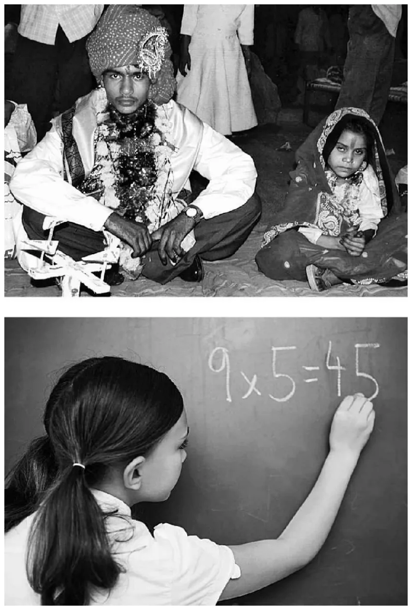
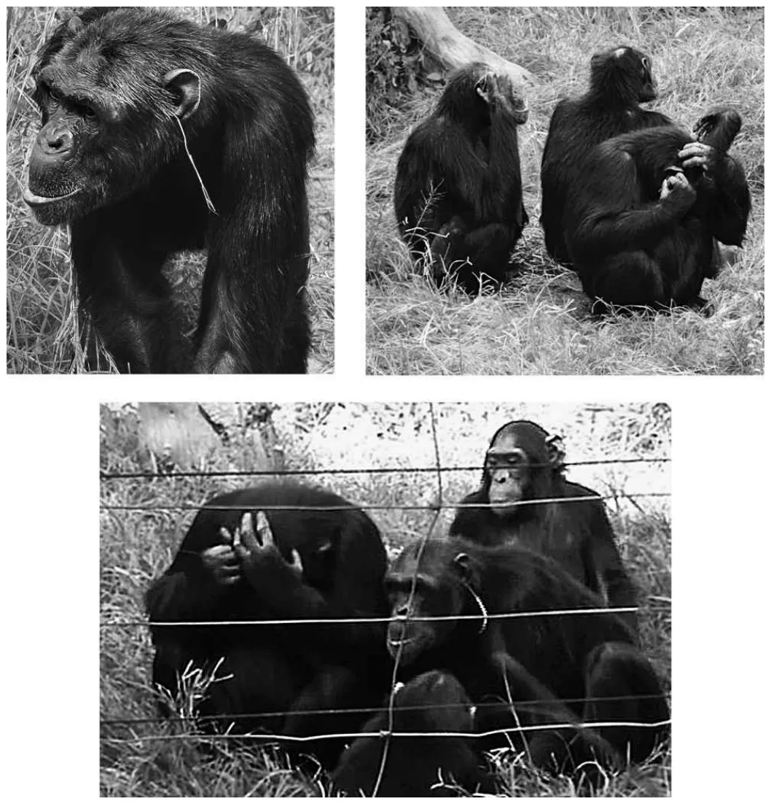
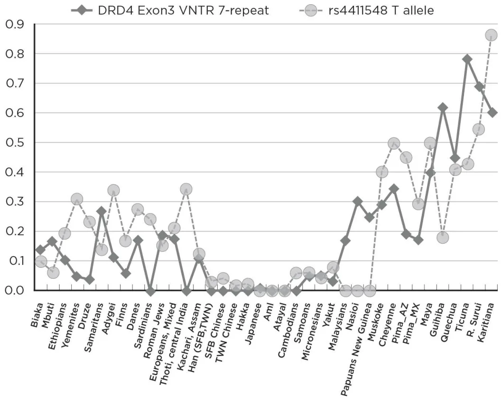
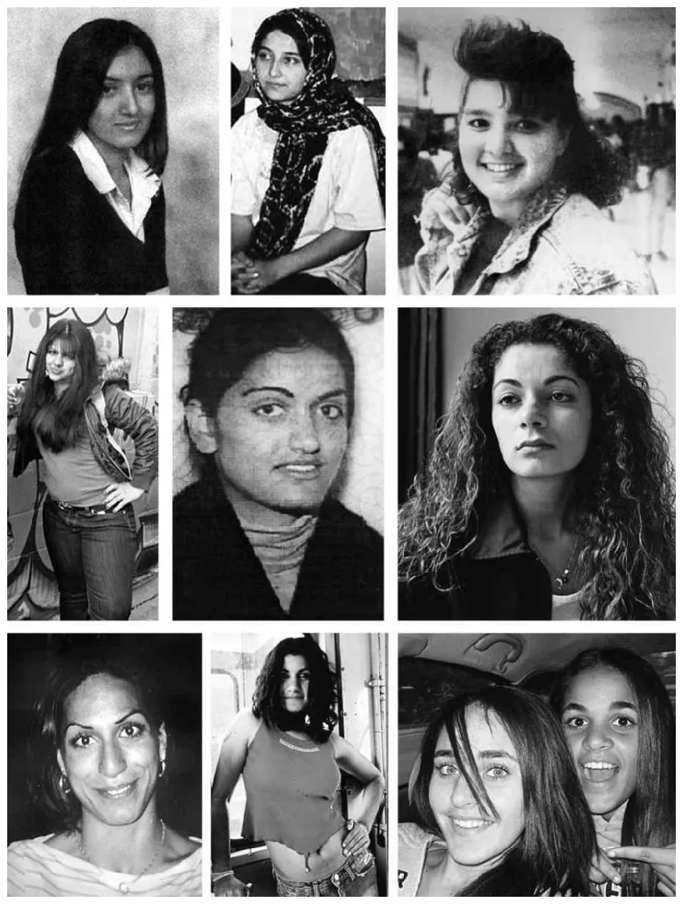
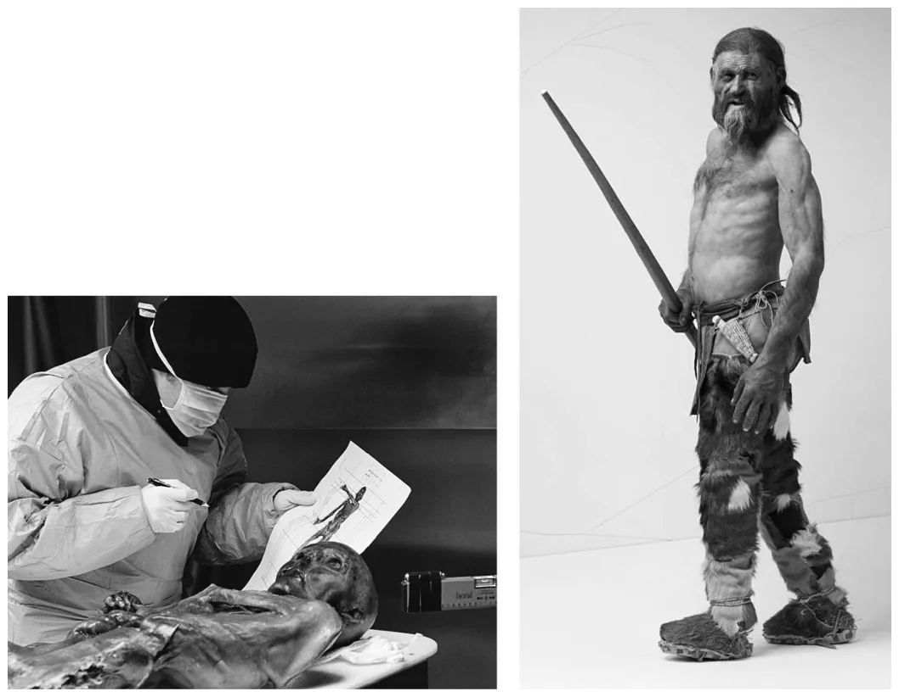
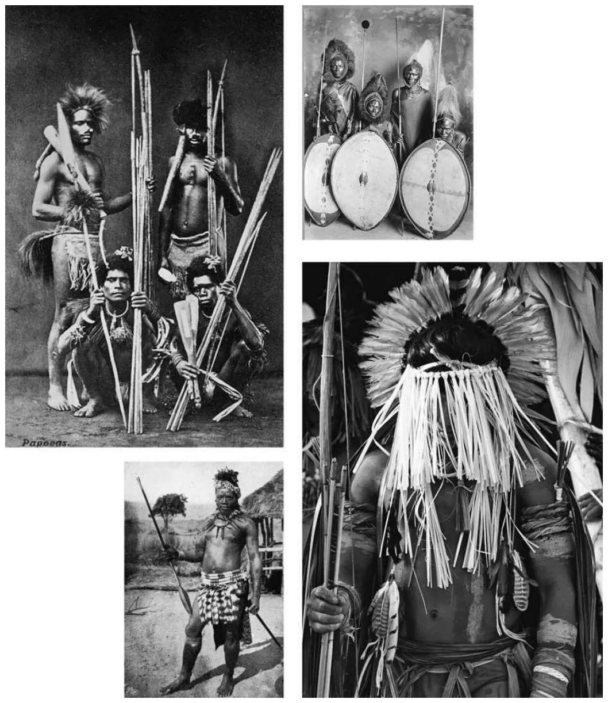

Chương 9 — Nhiều thế kỷ đến nhiều thiên niên kỷ trước đó
Chương chín
Hàng thế kỷ đến hàng thiên niên kỷ
Trước đó
Hãy bắt đầu với một sự lạc đề tưởng chừng như không liên quan. Một số phần của chương 4 và chương 7 đã bác bỏ một vài khác biệt giới tính được cho là tồn tại liên quan đến não bộ, hormone và hành vi. Tuy nhiên, có một khác biệt vẫn tồn tại dai dẳng. Nó nằm khá xa những vấn đề mà cuốn sách này quan tâm, nhưng xin hãy kiên nhẫn với tôi.
Một phát hiện nhất quán đáng kinh ngạc, bắt đầu từ học sinh tiểu học, là nam giới giỏi toán hơn nữ giới. Dù sự khác biệt là nhỏ khi xét đến điểm số trung bình, nhưng lại có sự chênh lệch rất lớn khi xét đến những ngôi sao toán học ở phần cực trên của phân phối. Ví dụ, năm 1983, cứ mỗi một nữ sinh đạt điểm ở phân vị cao nhất trong kỳ thi SAT môn toán, lại có tới mười một nam sinh.
Tại sao lại có sự khác biệt này? Luôn có những gợi ý rằng testosterone đóng vai trò trung tâm. Trong quá trình phát triển, testosterone thúc đẩy sự tăng trưởng của một vùng não liên quan đến tư duy toán học, và việc bổ sung testosterone cho người trưởng thành giúp cải thiện một số kỹ năng toán học. Ồ, được thôi, đó là do sinh học.
Nhưng hãy xem xét một bài báo đăng trên tạp chí *Science* năm 2008.1 Các tác giả đã khảo sát mối quan hệ giữa điểm toán và bình đẳng giới tại bốn mươi quốc gia (dựa trên các chỉ số bình đẳng giới về kinh tế, giáo dục và chính trị; tệ nhất là Thổ Nhĩ Kỳ, Hoa Kỳ ở mức trung bình, và dĩ nhiên, các nước Scandinavia đứng đầu). Thật bất ngờ, quốc gia càng bình đẳng giới thì sự chênh lệch về điểm toán càng ít. Khi đến các nước Scandinavia, sự chênh lệch này không còn ý nghĩa thống kê. Và khi xem xét quốc gia bình đẳng giới nhất trên trái đất vào thời điểm đó là Iceland, các bé gái còn giỏi toán hơn các bé trai.*

L. Guiso và cộng sự, “Culture, Gender, and Math,” *Sci* 320 (2008): 1164.
Truy cập bit.ly/2o88s4O để xem phiên bản lớn hơn của biểu đồ này.
Nói cách khác, dù bạn không bao giờ có thể chắc chắn tuyệt đối, cô gái Afghanistan trong bức ảnh phía trên ở trang bên, ngồi cạnh chồng mình, ít có khả năng giải được giả thuyết Erdös-Hajnal trong lý thuyết đồ thị hơn cô gái Thụy Điển trong bức ảnh bên dưới.
Nói theo một cách khác nữa, văn hóa rất quan trọng. Chúng ta mang nó theo mình đến bất cứ nơi đâu. Một ví dụ là mức độ tham nhũng — sự thiếu minh bạch của chính phủ về việc sử dụng quyền lực và tài chính — ở quê hương của các nhà ngoại giao Liên Hợp Quốc dự đoán khả năng họ tích lũy vé phạt đỗ xe chưa thanh toán ở Manhattan. Văn hóa để lại những tàn dư lâu dài — người Shiite và người Sunni tàn sát lẫn nhau vì một vấn đề kế vị từ mười bốn thế kỷ trước; trên khắp ba mươi ba quốc gia, mật độ dân số vào năm 1500 dự đoán đáng kể mức độ độc tài của chính phủ vào năm 2000; qua hàng thiên niên kỷ, việc áp dụng cuốc sớm hơn cày dự đoán mức độ bình đẳng giới ngày nay.2

Và nói theo một cách khác, khác nữa, khi chúng ta chiêm nghiệm những hành động mang tính biểu tượng của mình — việc bóp cò súng, việc chạm vào một cánh tay — và muốn giải thích tại sao chúng xảy ra bằng một khuôn khổ sinh học, thì văn hóa tốt hơn hết nên nằm trong danh sách các yếu tố giải thích của chúng ta.
Do đó, mục tiêu của chương này là:
Xem xét các khuôn mẫu biến thiên văn hóa có hệ thống khi chúng liên quan đến những hành vi tốt đẹp nhất và tồi tệ nhất của chúng ta. Khám phá cách các kiểu não bộ khác nhau tạo ra nền văn hóa khác nhau và các kiểu văn hóa khác nhau tạo ra những bộ não khác nhau. Nói cách khác, văn hóa và sinh học đồng tiến hóa như thế nào.3
Thấy được vai trò của sinh thái học trong việc định hình văn hóa.
ĐỊNH NGHĨA, NHỮNG ĐIỂM TƯƠNG ĐỒNG VÀ KHÁC BIỆT
“Văn hóa,” dĩ nhiên, đã được định nghĩa theo nhiều cách khác nhau. Một định nghĩa có tầm ảnh hưởng đến từ Edward Tylor, một nhà nhân học văn hóa lỗi lạc thế kỷ mười chín. Đối với ông, văn hóa là “tổng thể phức hợp bao gồm tri thức, tín ngưỡng, nghệ thuật, đạo đức, luật pháp, phong tục và bất kỳ năng lực và thói quen nào khác mà con người [sic] tiếp thu được với tư cách là một thành viên của xã hội.”4
Định nghĩa này, rõ ràng, hướng tới một thứ đặc thù của con người. Jane Goodall đã làm mọi người kinh ngạc vào những năm 1960 khi công bố sự thật nay đã thành kinh điển rằng tinh tinh biết chế tạo công cụ. Các đối tượng nghiên cứu của bà đã biến đổi những cành cây nhỏ bằng cách tuốt bỏ lá và chọc chúng vào gò mối; lũ mối sẽ cắn vào cành cây và vẫn bám chặt khi cành cây được rút ra, mang lại một bữa ăn nhẹ cho tinh tinh.
Đây mới chỉ là khởi đầu. Tinh tinh sau đó được phát hiện sử dụng nhiều loại công cụ khác nhau — đe bằng gỗ hoặc đá để đập vỡ hạt, những nắm lá nhai nát để thấm nước ở những nơi khó với tới, và, một điều thực sự gây sốc, những cành cây vót nhọn để xiên cu li (bush babies).5 Các quần thể khác nhau chế tạo các công cụ khác nhau; các kỹ thuật mới lan truyền qua mạng lưới xã hội (giữa những con tinh tinh hay giao du với nhau); tinh tinh con học cách làm bằng cách quan sát mẹ; kỹ thuật lan truyền từ nhóm này sang nhóm khác khi có cá thể di cư; những công cụ đập hạt của tinh tinh có niên đại hơn bốn nghìn năm đã được khai quật. Và trong ví dụ yêu thích của tôi, lơ lửng giữa việc sử dụng công cụ và làm phụ kiện thời trang, một con tinh tinh cái ở Zambia bỗng nảy ra ý tưởng đi loanh quanh với một cọng cỏ giống như ống hút giắt ở tai. Hành động này chẳng có chức năng rõ ràng nào; dường như cô nàng chỉ thích có một cọng cỏ thò ra từ tai mình. Kiện cô ta đi. Cô ta làm thế suốt nhiều năm, và trong thời gian đó thói quen này lan rộng ra cả bầy. Một tín đồ thời trang thực thụ.
Trong những thập kỷ kể từ khám phá của Goodall, việc sử dụng công cụ đã được quan sát thấy ở vượn và khỉ, voi, rái cá biển, cầy mangut.6 Cá heo dùng bọt biển để đào những con cá vùi mình dưới đáy biển. Chim dùng công cụ để làm tổ hoặc kiếm ăn — chẳng hạn như chim giẻ cùi và quạ dùng cành cây để câu côn trùng, giống hệt tinh tinh. Và còn có việc sử dụng công cụ ở động vật chân đầu, bò sát và cá.

E. van Leeuwen và cộng sự, “A Group-Specific Arbitrary Tradition in Chimpanzees (Pan troglodytes),” *Animal Cog* 17 (2014): 1421.
Tất cả những điều này đều vô cùng ấn tượng. Tuy nhiên, sự truyền thụ văn hóa như vậy không cho thấy sự tiến bộ — công cụ đập hạt của tinh tinh năm nay gần như giống hệt với bốn nghìn năm trước. Và với một vài ngoại lệ (sẽ nói thêm sau), văn hóa phi nhân loại hoàn toàn chỉ xoay quanh văn hóa vật chất (so với, chẳng hạn, tổ chức xã hội).
Vì vậy, định nghĩa cổ điển về văn hóa không chỉ dành riêng cho con người.7 Hầu hết các nhà nhân học văn hóa không mấy hào hứng với cuộc cách mạng của Goodall — tuyệt đấy, tiếp theo chắc các nhà động vật học sẽ báo cáo rằng Rafiki đã thuyết phục Simba trở thành Vua Sư Tử — và giờ đây thường nhấn mạnh các định nghĩa về văn hóa nhằm loại tinh tinh và các loài hạ đẳng khác ra khỏi cuộc chơi. Người ta ưa chuộng tư duy của Alfred Kroeber, Clyde Kluckhohn và Clifford Geertz, ba nhà nhân học xã hội nặng ký tập trung vào cách văn hóa xoay quanh các ý tưởng và biểu tượng, thay vì chỉ là những hành vi hiện thực hóa chúng, hay các sản phẩm vật chất như lưỡi dao đá lửa hay iPhone. Các nhà nhân học đương đại như Richard Shweder nhấn mạnh một góc nhìn cảm tính hơn nhưng vẫn lấy con người làm trung tâm về văn hóa như là những phiên bản đạo đức và bản năng của cái đúng và cái sai. Và tất nhiên những quan điểm này đã bị các nhà hậu hiện đại phê bình vì những lý do mà tôi chẳng thể nào hiểu nổi.
Về cơ bản, tôi không muốn dính dáng gì đến những cuộc tranh luận này. Đối với mục đích của chúng ta, ta sẽ dựa vào một định nghĩa trực quan về văn hóa được Frans de Waal nhấn mạnh: “văn hóa” là cách chúng ta làm và suy nghĩ về mọi thứ, được truyền lại bằng những phương thức phi di truyền.
Làm việc với định nghĩa rộng đó, điều nổi bật nhất về sự đa dạng của các nền văn hóa nhân loại là những điểm tương đồng hay những điểm khác biệt? Tùy thuộc vào sở thích của bạn.
Nếu những điểm tương đồng có vẻ thú vị nhất, thì có rất nhiều — suy cho cùng, nhiều nhóm người đã độc lập phát minh ra nông nghiệp, chữ viết, đồ gốm, ướp xác, thiên văn học và tiền đúc. Ở thái cực của sự tương đồng là các phổ quát văn hóa (human universals), và nhiều học giả đã đề xuất các danh sách về chúng. Một trong những danh sách dài nhất và được trích dẫn nhiều nhất đến từ nhà nhân học Donald Brown.8 Dưới đây là một phần danh sách các phổ quát văn hóa được ông đề xuất: sự tồn tại và mối quan tâm đến thẩm mỹ, ma thuật, nam và nữ được xem là có bản chất khác nhau, ngôn ngữ nựng trẻ, thần linh, việc tạo ra các trạng thái ý thức biến đổi, hôn nhân, trang điểm cơ thể, giết người, cấm đoán một số loại giết người, thuật ngữ thân tộc, số đếm, nấu nướng, tình dục riêng tư, tên gọi, nhảy múa, vui chơi, phân biệt đúng và sai, chủ nghĩa gia đình trị (nepotism), cấm đoán một số kiểu quan hệ tình dục, sự đồng cảm, sự có đi có lại, nghi lễ, khái niệm về sự công bằng, thần thoại về thế giới bên kia, âm nhạc, thuật ngữ màu sắc, điều cấm kỵ, buôn chuyện, thuật ngữ giới tính nhị phân, thiên vị nhóm nội (in-group favoritism), ngôn ngữ, sự hài hước, nói dối, biểu tượng, khái niệm ngôn ngữ học về từ “và,” công cụ, thương mại và tập đi vệ sinh. Và đó mới chỉ là một phần danh sách.
Đối với mục đích của chương này, những khác biệt văn hóa lớn đến choáng ngợp trong cách cuộc sống được trải nghiệm, trong các nguồn lực và đặc quyền sẵn có, trong cơ hội và quỹ đạo cuộc đời, mới là điều thú vị nhất. Chỉ cần bắt đầu với một vài số liệu thống kê nhân khẩu học gây kinh ngạc sinh ra từ sự khác biệt văn hóa: một bé gái sinh ra ở Monaco có tuổi thọ kỳ vọng là chín mươi ba năm; một bé gái ở Angola là ba mươi chín. Latvia có tỷ lệ biết chữ 99,9 phần trăm; Niger là 19 phần trăm. Hơn 10 phần trăm trẻ em ở Afghanistan tử vong trong năm đầu đời, so với khoảng 0,2 phần trăm ở Iceland. GDP bình quân đầu người là 137.000 đô la ở Qatar, 609 đô la ở Cộng hòa Trung Phi. Một phụ nữ ở Nam Sudan có nguy cơ tử vong khi sinh con cao gấp khoảng một nghìn lần so với một phụ nữ ở Estonia.9
Trải nghiệm về bạo lực cũng biến thiên vô cùng lớn theo văn hóa. Một người ở Honduras có nguy cơ bị sát hại cao gấp 450 lần so với một người ở Singapore. 65 phần trăm phụ nữ trải qua bạo lực từ bạn tình ở Trung Phi, so với 16 phần trăm ở Đông Á. Một phụ nữ Nam Phi có nguy cơ bị cưỡng hiếp cao hơn một trăm lần so với một phụ nữ ở Nhật Bản. Nếu là một đứa trẻ đi học ở Romania, Bulgaria hoặc Ukraine, bạn có nguy cơ bị bắt nạt kinh niên cao gấp khoảng mười lần so với một đứa trẻ ở Thụy Điển, Iceland hoặc Đan Mạch (hãy đón xem phần phân tích kỹ hơn về điều này).10
Tất nhiên, còn có những khác biệt văn hóa nổi tiếng liên quan đến giới tính. Có những quốc gia Scandinavia tiến gần tới bình đẳng giới hoàn toàn và Rwanda, với 63 phần trăm số ghế tại hạ viện do phụ nữ nắm giữ, so với Ả Rập Xê Út, nơi phụ nữ không được phép ra khỏi nhà trừ khi có người giám hộ nam đi cùng, và Yemen, Qatar, Tonga, với 0 phần trăm nữ nghị sĩ (và Hoa Kỳ ở mức khoảng 20 phần trăm).11
Rồi có Philippines, nơi 93 phần trăm người dân nói rằng họ cảm thấy hạnh phúc và được yêu thương, so với 29 phần trăm người Armenia. Trong các trò chơi kinh tế, người dân ở Hy Lạp và Oman có nhiều khả năng tiêu tốn nguồn lực để trừng phạt những người chơi quá hào phóng hơn là trừng phạt những kẻ gian lận, trong khi ở người Úc, kiểu “trừng phạt phản xã hội” (antisocial punishment) như vậy không hề tồn tại. Và có những tiêu chí khác nhau một trời một vực cho hành vi thân xã hội. Trong một nghiên cứu về nhân viên trên khắp thế giới làm việc cho cùng một ngân hàng đa quốc gia, lý do quan trọng nhất được nêu ra để giúp đỡ ai đó là gì? Ở người Mỹ, đó là vì người đó trước đây đã từng giúp họ; ở người Trung Quốc, đó là vì người đó có cấp bậc cao hơn; ở Tây Ban Nha, đó là vì họ là bạn bè hoặc người quen.12
Cuộc đời bạn sẽ khác biệt đến mức không thể nhận ra, tùy thuộc vào việc con cò thả bạn xuống nền văn hóa nào. Khi lội qua sự đa dạng này, có một số khuôn mẫu, sự tương phản và lưỡng phân đáng chú ý.
VĂN HÓA TẬP THỂ SO VỚI VĂN HÓA CÁ NHÂN
Như đã giới thiệu ở chương 7, một tỷ lệ lớn các nghiên cứu tâm lý học xuyên văn hóa so sánh các nền văn hóa tập thể (collectivist) với các nền văn hóa cá nhân (individualist). Điều này hầu như luôn có nghĩa là so sánh giữa các đối tượng từ các nền văn hóa tập thể Đông Á và người Mỹ, những người đến từ cái nôi của mọi nền văn hóa cá nhân.* Theo định nghĩa, các nền văn hóa tập thể đề cao sự hòa hợp, phụ thuộc lẫn nhau, sự tuân thủ và lấy nhu cầu của nhóm làm kim chỉ nam cho hành vi, trong khi các nền văn hóa cá nhân đề cao sự tự chủ, thành tựu cá nhân, tính độc đáo và các nhu cầu cũng như quyền lợi của cá nhân. Nói một cách hơi châm biếm một chút, văn hóa cá nhân có thể được tóm tắt bằng khái niệm kinh điển của người Mỹ là “lo cho bản thân mình trước nhất” (looking out for number one); văn hóa tập thể có thể được tóm tắt bằng trải nghiệm điển hình của các giáo viên thuộc Tổ chức Hòa bình (Peace Corps) của Mỹ ở những quốc gia như vậy — hãy đặt cho học sinh của bạn một câu hỏi toán, và sẽ chẳng ai xung phong trả lời đúng vì các em không muốn nổi bật và làm bẽ mặt bạn học của mình.
Sự tương phản giữa chủ nghĩa cá nhân và chủ nghĩa tập thể rất nổi bật. Trong các nền văn hóa cá nhân, con người thường xuyên tìm kiếm sự độc đáo và thành tích cá nhân, sử dụng đại từ nhân xưng ngôi thứ nhất số ít thường xuyên hơn, định nghĩa bản thân theo các thuật ngữ cá nhân (“Tôi là một nhà thầu”) hơn là quan hệ (“Tôi là một người cha/mẹ”), quy công thành công của mình cho các thuộc tính nội tại (“Tôi thực sự giỏi môn X”) hơn là các yếu tố tình huống (“Tôi đã ở đúng nơi vào đúng thời điểm”). Quá khứ thường được ghi nhớ thông qua các sự kiện (“Đó là mùa hè tôi học bơi”) hơn là các tương tác xã hội (“Đó là mùa hè chúng tôi trở thành bạn bè”). Động lực và sự hài lòng đến từ nỗ lực của bản thân hơn là từ nỗ lực của nhóm (phản ánh mức độ mà chủ nghĩa cá nhân Mỹ xoay quanh sự không hợp tác, hơn là sự không tuân thủ). Động lực cạnh tranh là để vượt lên trên tất cả những người khác. Khi được yêu cầu vẽ một “biểu đồ xã hội” (sociogram) — một sơ đồ về mạng lưới xã hội của họ, với các vòng tròn đại diện cho bản thân và bạn bè, nối với nhau bằng các đường thẳng — người Mỹ có xu hướng đặt vòng tròn đại diện cho chính mình ở chính giữa trang giấy và vẽ nó to nhất.13
Ngược lại, những người đến từ các nền văn hóa tập thể cho thấy sự thấu hiểu xã hội nhiều hơn; một số báo cáo cho thấy họ giỏi hơn trong các nhiệm vụ Lý thuyết Tâm trí (Theory of Mind), chính xác hơn trong việc hiểu góc nhìn của người khác — với “góc nhìn” trải dài từ những suy nghĩ trừu tượng của người kia đến cách các vật thể trông như thế nào từ vị trí người đó đang ngồi. Nhóm bị đổ lỗi nhiều hơn khi ai đó vi phạm chuẩn mực do áp lực bạn bè, và có xu hướng đưa ra các giải thích theo tình huống cho hành vi nhiều hơn. Động lực cạnh tranh là để không bị tụt lại phía sau mọi người. Và khi vẽ biểu đồ xã hội, vòng tròn đại diện cho “bản thân bạn” nằm xa trung tâm, và còn lâu mới là vòng tròn lớn nhất.
Dĩ nhiên, những khác biệt văn hóa này có các tương quan sinh học. Ví dụ, các đối tượng từ nền văn hóa cá nhân kích hoạt mạnh mẽ vùng vỏ não trước trán giữa (mPFC - vùng cảm xúc) khi nhìn vào ảnh của chính mình, so với khi nhìn vào ảnh của người thân hoặc bạn bè; ngược lại, mức độ kích hoạt ở các đối tượng Đông Á ít hơn nhiều.* Một ví dụ khác là minh chứng yêu thích của tôi về sự khác biệt xuyên văn hóa trong căng thẳng tâm lý — khi được yêu cầu nhớ lại tự do, người Mỹ có nhiều khả năng hơn người Đông Á trong việc nhớ lại những lần họ gây ảnh hưởng lên ai đó; ngược lại, người Đông Á có nhiều khả năng nhớ lại những lần ai đó gây ảnh hưởng lên họ. Hãy ép người Mỹ nói dài dòng về một lần ai đó gây ảnh hưởng lên họ, hoặc ép người Đông Á kể chi tiết về việc họ gây ảnh hưởng lên ai đó, và cả hai đều tiết ra glucocorticoid do sự căng thẳng khi phải kể lại sự kiện khó chịu này. Và công trình của các đồng nghiệp kiêm bạn bè của tôi ở Stanford là Jeanne Tsai và Brian Knutson cho thấy hệ thống dopamine trung não - hệ viền (mesolimbic) kích hoạt ở người Mỹ gốc Âu khi nhìn vào các biểu cảm khuôn mặt phấn khích; còn ở người Trung Quốc, là khi nhìn vào các biểu cảm điềm tĩnh.
Như chúng ta sẽ thấy ở chương 13, những khác biệt văn hóa này tạo ra các hệ thống đạo đức khác nhau. Trong những xã hội tập thể truyền thống nhất, sự tuân thủ và đạo đức gần như đồng nghĩa và việc thực thi chuẩn mực xoay quanh sự xấu hổ (“Mọi người sẽ nghĩ gì nếu mình làm thế?”) hơn là cảm giác tội lỗi (“Làm sao mình có thể sống nổi với bản thân nếu làm thế?”). Các nền văn hóa tập thể nuôi dưỡng các lập trường đạo đức vị lợi và duy hệ quả hơn (ví dụ: sẵn sàng hơn để một người vô tội bị bỏ tù nhằm ngăn chặn một cuộc bạo loạn). Việc nhấn mạnh cực độ vào nhóm ở văn hóa tập thể tạo ra mức độ thiên vị nhóm nội (in-group bias) lớn hơn so với các thành viên văn hóa cá nhân. Chẳng hạn, trong một nghiên cứu, các đối tượng người Hàn Quốc và người Mỹ gốc Âu quan sát hình ảnh của các thành viên cùng nhóm hoặc khác nhóm đang chịu đau đớn. Tất cả các đối tượng đều báo cáo sự đồng cảm chủ quan nhiều hơn và cho thấy sự kích hoạt mạnh hơn của các vùng não Lý thuyết Tâm trí (tức là vùng tiếp giáp thái dương - đỉnh) khi quan sát các thành viên cùng nhóm, nhưng sự thiên vị này lớn hơn đáng kể ở các đối tượng người Hàn Quốc. Ngoài ra, các đối tượng từ cả nền văn hóa cá nhân và tập thể đều hạ thấp các thành viên nhóm ngoại, nhưng chỉ nhóm đầu tiên mới thổi phồng đánh giá về nhóm của chính mình. Nói cách khác, người Đông Á, không giống như người Mỹ, không cần phải tâng bốc nhóm của mình lên mới có thể coi người khác là thấp kém hơn.14
Điều hấp dẫn là hướng đi mà một số khác biệt này thực hiện, như được thể hiện qua các cách tiếp cận tiên phong bởi một trong những người khổng lồ trong lĩnh vực này, Richard Nisbett thuộc Đại học Michigan. Người phương Tây giải quyết vấn đề theo cách tuyến tính hơn, phụ thuộc nhiều hơn vào mã hóa ngôn ngữ thay vì không gian. Khi được yêu cầu giải thích chuyển động của một quả bóng, người Đông Á có nhiều khả năng viện dẫn các giải thích quan hệ được xây dựng xung quanh sự tương tác của quả bóng với môi trường của nó — lực ma sát — trong khi người phương Tây tập trung vào các thuộc tính nội tại như trọng lượng và mật độ. Người phương Tây chính xác hơn trong việc ước lượng độ dài theo giá trị tuyệt đối (“Đường thẳng đó dài bao nhiêu?”) trong khi người Đông Á giỏi hơn với các ước lượng quan hệ (“Đường thẳng này dài hơn đường thẳng kia bao nhiêu?”). Hoặc thế này thì sao: Hãy xem xét một con khỉ, một con gấu và một quả chuối. Hai thứ nào đi cùng nhau? Người phương Tây tư duy theo phạm trù và chọn con khỉ và con gấu — cả hai đều là động vật. Người Đông Á tư duy theo quan hệ và liên kết con khỉ với quả chuối — nếu bạn đang nghĩ đến một con khỉ, hãy nghĩ luôn đến thức ăn mà nó sẽ cần.15
Đáng kinh ngạc là những khác biệt văn hóa còn mở rộng sang cả quá trình xử lý cảm giác, trong đó người phương Tây xử lý thông tin theo cách tập trung hơn, còn người Đông Á theo cách toàn thể (holistic) hơn.16 Hãy cho xem bức ảnh một người đứng giữa một khung cảnh phức tạp; người Đông Á sẽ nhớ chính xác hơn về khung cảnh, bối cảnh, trong khi người phương Tây nhớ người đứng ở giữa. Thật đáng kinh ngạc, điều này thậm chí còn được quan sát thấy ở cấp độ theo dõi chuyển động mắt — thông thường mắt người phương Tây đầu tiên sẽ nhìn vào trung tâm bức ảnh, trong khi người Đông Á quét toàn bộ khung cảnh. Hơn nữa, nếu ép người phương Tây tập trung vào bối cảnh toàn thể của bức ảnh, hoặc ép người Đông Á tập trung vào chủ thể trung tâm, vỏ não trước trán phải làm việc vất vả hơn, kích hoạt nhiều hơn.
Như đã đề cập ở chương 7, các giá trị văn hóa được gieo mầm từ rất sớm trong đời. Vì vậy, không có gì ngạc nhiên khi văn hóa định hình thái độ của chúng ta về thành công, đạo đức, hạnh phúc, tình yêu, v.v. Nhưng điều làm tôi giật mình là cách những khác biệt văn hóa này cũng định hình nơi mắt bạn tập trung vào một bức ảnh hay cách bạn nghĩ về khỉ và chuối hoặc vật lý của quỹ đạo một quả bóng. Tác động của văn hóa là vô cùng to lớn.
Dĩ nhiên, có nhiều lưu ý khi so sánh chủ nghĩa tập thể/chủ nghĩa cá nhân:
Điều hiển nhiên nhất là cụm từ muôn thuở “tính trung bình” — chẳng hạn, có rất nhiều người phương Tây mang tính tập thể hơn rất nhiều người Đông Á. Nhìn chung, những người có tính cá nhân cao nhất theo các thước đo nhân cách khác nhau cũng thể hiện tính cá nhân cao nhất trong các nghiên cứu chẩn đoán hình ảnh thần kinh.17
Văn hóa thay đổi theo thời gian. Ví dụ, mức độ tuân thủ trong các nền văn hóa Đông Á đang giảm dần (chẳng hạn, một nghiên cứu cho thấy tỷ lệ trẻ sơ sinh ở Nhật Bản được đặt những cái tên độc đáo ngày càng tăng). Hơn nữa, mức độ thấm nhuần một nền văn hóa của một người có thể bị thay đổi nhanh chóng. Ví dụ, việc mồi (priming) cho ai đó trước đó bằng các tín hiệu văn hóa cá nhân hoặc tập thể sẽ làm thay đổi mức độ toàn thể khi người đó xử lý một bức ảnh. Điều này đặc biệt đúng đối với những cá nhân song văn hóa.18
Chúng ta sẽ sớm thấy một số khác biệt di truyền giữa các quần thể tập thể và cá nhân. Không có gì giống như định mệnh di truyền ở đây cả — bằng chứng tốt nhất cho kết luận này đến từ một trong những nhóm đối chứng trong nhiều nghiên cứu này, cụ thể là người Mỹ gốc Đông Á. Nhìn chung, chỉ mất khoảng một thế hệ để con cháu của những người nhập cư Đông Á đến Mỹ trở nên mang tính cá nhân ngang ngửa với người Mỹ gốc Âu.19
Rõ ràng, “người Đông Á” và “người phương Tây” không phải là những thực thể đồng nhất. Cứ thử hỏi một người từ Bắc Kinh so với thảo nguyên Tây Tạng xem. Hoặc nhốt ba người từ Berkeley, Brooklyn và Biloxi vào một cái thang máy bị kẹt trong vài giờ và xem chuyện gì xảy ra. Như chúng ta sẽ thấy, có sự biến thiên đáng kinh ngạc ngay bên trong các nền văn hóa.
Tại sao con người ở một phần của địa cầu lại phát triển các nền văn hóa tập thể, trong khi những nơi khác lại đi theo hướng cá nhân? Hoa Kỳ là hình mẫu tiêu biểu của chủ nghĩa cá nhân vì ít nhất hai lý do. Đầu tiên là sự nhập cư. Hiện nay, 12 phần trăm người Mỹ là người nhập cư, 12 phần trăm khác là (giống như tôi) con của người nhập cư, và tất cả những người còn lại ngoại trừ 0,9 phần trăm người Mỹ bản địa thuần chủng đều là hậu duệ của những người di cư trong vòng năm trăm năm qua.20 Và những người nhập cư đó là ai? Họ là những kẻ lập dị ở thế giới cũ, những kẻ bất mãn, bồn chồn, dị giáo, những con cừu đen, tăng động, hưng cảm nhẹ, ghét đời, đứng ngồi không yên, khác người, khao khát tự do, khao khát giàu có, khao khát thoát khỏi cái xóm nhỏ tẻ nhạt đầy áp bức chết tiệt của họ, khao khát. Kết hợp điều đó với lý do thứ hai — trong phần lớn lịch sử thuộc địa và độc lập của mình, nước Mỹ có một biên giới luôn dịch chuyển để lôi kéo những người có sự lạc quan gai góc cực độ mà chỉ việc đặt vé tàu đến Tân Thế Giới thôi là chưa đủ mới mẻ — và bạn có một nước Mỹ đầy tính cá nhân.
Tại sao Đông Á lại cung cấp những ví dụ sách giáo khoa về chủ nghĩa tập thể?21 Chìa khóa nằm ở cách văn hóa được định hình bởi phương thức kiếm sống truyền thống của con người, mà phương thức này lại được định hình bởi sinh thái học. Và ở Đông Á, tất cả đều xoay quanh cây lúa nước. Lúa nước, được thuần hóa ở đó khoảng mười nghìn năm trước, đòi hỏi lượng lao động cộng đồng khổng lồ. Không chỉ là việc gieo cấy và thu hoạch vất vả đến gãy lưng, vốn được thực hiện luân phiên vì cả làng cần chung tay thu hoạch lúa cho từng gia đình.* Lao động tập thể trước hết cần thiết để cải tạo hệ sinh thái — làm ruộng bậc thang trên núi, xây dựng và duy trì hệ thống thủy lợi để kiểm soát việc dẫn nước vào ruộng. Và còn vấn đề chia nước sao cho công bằng — ở Bali, thẩm quyền tôn giáo điều tiết quyền tiếp cận nguồn nước, được biểu tượng hóa bằng các ngôi đền nước nổi tiếng. Điều này thì sao, thật đáng kinh ngạc — hệ thống thủy lợi Đô Giang Yển tưới tiêu cho hơn năm nghìn km vuông ruộng lúa gần Thành Đô, Trung Quốc, và nó đã hơn hai nghìn năm tuổi. Gốc rễ của chủ nghĩa tập thể, giống như rễ cây lúa, ăn sâu ở Đông Á.*

Một bài báo hấp dẫn trên tạp chí *Science* năm 2014 củng cố mối liên hệ giữa lúa nước và chủ nghĩa tập thể bằng cách khám phá một ngoại lệ.22 Ở một số vùng thuộc miền bắc Trung Quốc, rất khó trồng lúa nước, và thay vào đó người dân đã trồng lúa mì trong hàng thiên niên kỷ; việc này đòi hỏi canh tác cá nhân thay vì tập thể. Và theo các bài kiểm tra tiêu chuẩn về văn hóa cá nhân so với tập thể (ví dụ: vẽ biểu đồ xã hội, hai thứ nào giống nhau nhất trong số thỏ, chó và cà rốt?) — họ trông giống hệt người phương Tây. Khu vực này có hai dấu hiệu khác của chủ nghĩa cá nhân, cụ thể là tỷ lệ ly hôn cao hơn và tính sáng tạo cao hơn — số đơn đăng ký bằng sáng chế — so với các vùng trồng lúa nước. Gốc rễ của chủ nghĩa cá nhân, giống như rễ cây lúa mì, ăn sâu ở miền bắc Trung Quốc.
Mối liên hệ giữa sinh thái, phương thức sản xuất và văn hóa được thể hiện trong một nghiên cứu hiếm hoi về chủ nghĩa tập thể/cá nhân không so sánh người châu Á và người phương Tây.23
Các tác giả đã nghiên cứu một vùng của Thổ Nhĩ Kỳ bên bờ Biển Đen, nơi những ngọn núi ôm sát bờ biển. Ở đó, rất gần nhau, người dân sống bằng nghề đánh cá, bằng nghề làm nông trên dải đất hẹp giữa biển và núi, hoặc làm nghề chăn thả gia súc trên núi. Cả ba nhóm đều có chung ngôn ngữ, tôn giáo và nguồn gen.
Nghề chăn thả mang tính đơn độc; trong khi nông dân và ngư dân Thổ Nhĩ Kỳ (cả nam và nữ) tuy không phải là nông dân trồng lúa nước Trung Quốc, nhưng ít nhất họ cũng làm việc trên đồng ruộng theo nhóm và điều khiển thuyền đánh cá theo thủy thủ đoàn. Những người chăn thả tư duy ít toàn thể hơn nông dân hoặc ngư dân — nhóm đầu tiên giỏi phán đoán độ dài tuyệt đối của các đường thẳng hơn, hai nhóm sau giỏi phán đoán tương đối hơn; khi được cho xem một chiếc găng tay, một chiếc khăn quàng cổ và một bàn tay, những người chăn thả xếp găng tay và khăn quàng vào cùng một phạm trù, trong khi những người khác xếp theo quan hệ, ghép găng tay với bàn tay. Theo lời của các tác giả, “sự phụ thuộc lẫn nhau về mặt xã hội nuôi dưỡng tư duy toàn thể.”
Chủ đề này xuất hiện trong một nghiên cứu khác, so sánh các cậu bé Do Thái từ những gia đình Chính thống giáo sùng đạo (bị chi phối bởi vô số quy tắc chung về niềm tin và hành vi) với những cậu bé từ các gia đình thế tục mang tính cá nhân hơn nhiều. Khả năng xử lý thị giác mang tính toàn thể hơn ở nhóm Chính thống giáo, và tập trung hơn ở nhóm thế tục.24
Sự phân đôi tập thể/cá nhân giữa Đông Á và phương Tây có một tương quan di truyền vô cùng thú vị.25 Hãy nhớ lại từ chương trước về dopamine và DRD4, gen quy định thụ thể D4. Nó cực kỳ biến dị, với ít nhất hai mươi lăm biến thể ở người (với mức độ biến dị ít hơn ở các loài linh trưởng khác). Hơn nữa, sự biến dị này không phải là sự trôi dạt ngẫu nhiên, vô thưởng vô phạt của các trình tự DNA; thay vào đó, đã có sự chọn lọc tích cực mạnh mẽ đối với các biến thể. Phổ biến nhất là biến thể 4R, xuất hiện ở khoảng một nửa người Đông Á và người Mỹ gốc Âu. Ngoài ra còn có biến thể 7R, tạo ra một thụ thể ít nhạy cảm hơn với dopamine ở vỏ não, liên quan đến việc tìm kiếm sự mới lạ, tính hướng ngoại và sự bốc đồng. Nó có trước con người hiện đại nhưng trở nên phổ biến hơn đáng kể vào khoảng mười đến hai mươi nghìn năm trước. Biến thể 7R xuất hiện ở khoảng 23 phần trăm người châu Âu và người Mỹ gốc Âu. Còn ở người Đông Á thì sao? 1 phần trăm.

Y. Ding và cộng sự, “Evidence of Positive Selection Acting at the Human Dopamine
Receptor D4 Gene Locus,” *PNAS* 99 (2002): 309.
Truy cập bit.ly/2nsuHz9 để xem phiên bản lớn hơn của biểu đồ này.
Vậy cái nào có trước, tần suất 7R hay phong cách văn hóa? Các biến thể 4R và 7R, cùng với 2R, xuất hiện trên toàn thế giới, ngụ ý rằng chúng đã tồn tại khi con người tỏa ra khỏi châu Phi từ 60.000 đến 130.000 năm trước. Công trình kinh điển của Kenneth Kidd tại Yale, khảo sát sự phân bố của 7R, cho thấy một điều đáng kinh ngạc.
Bắt đầu từ phía bên trái của biểu đồ trên, có tỷ lệ xuất hiện 7R khoảng 10 đến 25 phần trăm ở nhiều quần thể châu Phi, châu Âu và Trung Đông. Nhảy sang phía bên phải của biểu đồ, có tỷ lệ cao hơn một chút ở hậu duệ của những người bắt đầu nhảy đảo từ lục địa châu Á đến Malaysia và New Guinea. Điều tương tự cũng xảy ra với những người có tổ tiên di cư đến Bắc Mỹ qua cầu đất liền Bering khoảng mười lăm nghìn năm trước — các bộ lạc người Mỹ bản địa Muskoke, Cheyenne và Pima. Tiếp theo là người Maya ở Trung Mỹ — lên tới khoảng 40 phần trăm. Rồi đến người Guihiba và Quechua ở các vùng phía bắc Nam Mỹ, ở mức khoảng 55 phần trăm. Cuối cùng là hậu duệ của những người đã đi hết quãng đường tới lưu vực sông Amazon — người Ticuna, Surui và Karitiana — với tỷ lệ 7R khoảng 70 phần trăm, cao nhất thế giới. Nói cách khác, đó là hậu duệ của những người mà sau khi đặt chân đến nơi sau này là trung tâm thành phố Anchorage, đã quyết định cứ thế đi tiếp thêm sáu nghìn dặm nữa.* Tỷ lệ 7R cao, gắn liền với sự bốc đồng và tìm kiếm cái mới, là di sản của những con người đã thực hiện những cuộc di cư vĩ đại nhất trong lịch sử nhân loại.
Và ở giữa biểu đồ là tỷ lệ gần như bằng không của 7R ở Trung Quốc, Campuchia, Nhật Bản và Đài Loan (trong cộng đồng người Ami và Atayal). Khi người Đông Á thuần hóa cây lúa nước và phát minh ra xã hội tập thể, đã có một cuộc chọn lọc ồ ạt chống lại biến thể 7R; theo lời của Kidd, nó “gần như biến mất” ở các quần thể này.* Có lẽ những người mang gen 7R đã gãy cổ khi phát minh ra môn dù lượn, hoặc bồn chồn cố đi bộ sang Alaska nhưng chết đuối vì không còn cầu đất liền Bering nữa. Có lẽ họ là những bạn đời kém hấp dẫn hơn. Bất kể nguyên nhân là gì, chủ nghĩa tập thể văn hóa Đông Á đã đồng tiến hóa với sự chọn lọc chống lại biến thể 7R.*
Như vậy, trong sự tương phản văn hóa được nghiên cứu nhiều nhất này, chúng ta thấy sự tụ hội của các yếu tố sinh thái, phương thức sản xuất, khác biệt văn hóa, và sự khác biệt về nội tiết học, sinh học thần kinh và tần suất gen.* Những tương phản văn hóa xuất hiện theo những cách dễ đoán — ví dụ như đạo đức, sự đồng cảm, cách nuôi dạy con cái, cạnh tranh, hợp tác, định nghĩa về hạnh phúc — nhưng cũng xuất hiện theo những cách không ngờ tới — ví dụ như trong vòng vài mili-giây, mắt bạn nhìn vào đâu trên một bức ảnh, hay bạn nghĩ về thỏ và cà rốt như thế nào.
NGƯỜI DU MỤC CHĂN THẢ VÀ NGƯỜI MIỀN NAM
Một mối liên hệ quan trọng khác giữa sinh thái, phương thức sản xuất và văn hóa được thấy ở những môi trường khô cằn, khắc nghiệt, rộng mở và quá khó khăn cho nông nghiệp. Đây là thế giới của chủ nghĩa du mục chăn thả — những người lang thang trên sa mạc, thảo nguyên hoặc đài nguyên cùng đàn gia súc của họ.
Có người Bedouin ở Ả Rập, người Tuareg ở Bắc Phi, người Somali và Maasai ở Đông Phi, người Sami ở bắc Scandinavia, người Gujjar ở Ấn Độ, người Yörük ở Thổ Nhĩ Kỳ, người Tuva ở Mông Cổ, người Aymara ở dãy Andes. Có những đàn cừu, dê, bò, lạc đà không bướu, lạc đà, bò Tây Tạng, ngựa hoặc tuần lộc, với những người chăn thả sống nhờ thịt, sữa và máu của vật nuôi, và buôn bán len cùng da của chúng.
Các nhà nhân học từ lâu đã ghi nhận những điểm tương đồng trong các nền văn hóa chăn thả du mục sinh ra từ môi trường khắc nghiệt và tác động thường là tối thiểu của chính quyền trung ương cũng như pháp quyền. Trong sự khắc nghiệt cô lập đó tồn tại một sự thật cốt lõi của nghề chăn thả: kẻ trộm không thể đánh cắp mùa màng trên trang trại của ai đó hoặc hàng trăm loài cây ăn được của những người săn bắt - hái lượm, nhưng chúng có thể đánh cắp đàn gia súc của ai đó. Đây là điểm dễ tổn thương của nghề chăn thả, một thế giới của những kẻ trộm gia súc và những kẻ cướp bóc.
Điều này tạo ra nhiều hệ quả tương quan của nghề chăn thả:26
Chủ nghĩa quân phiệt tràn lan. Những người chăn thả, đặc biệt là ở các sa mạc, với các thành viên sống rải rác đi chăn bầy đàn, là mảnh đất sản sinh ra các tầng lớp chiến binh. Và đi kèm với họ thường là (a) chiến tích quân sự như bàn đạp để đạt địa vị xã hội; (b) cái chết trên chiến trường như một sự bảo đảm cho thế giới bên kia vinh hiển; (c) tỷ lệ cao về chế độ đa thê kinh tế và sự ngược đãi phụ nữ; và (d) cách nuôi dạy con cái độc đoán. Hiếm khi những người chăn thả (pastoralists) lại mang tính điền viên (pastoral) theo nghĩa bản giao hưởng số Sáu của Beethoven.
Trên toàn thế giới, thuyết độc thần tương đối hiếm; trong chừng mực nó có xuất hiện, nó có xác suất cao bất thường ở những người chăn thả trên sa mạc (trong khi cư dân rừng mưa nhiệt đới lại có xác suất cao bất thường theo thuyết đa thần). Điều này rất hợp lý. Sa mạc dạy những điều khắc nghiệt, đơn nhất, một thế giới bị rút gọn về những thứ cơ bản đơn giản, khô kiệt, bị lò lửa thiêu đốt mà con người tiếp cận với một chủ nghĩa định mệnh sâu sắc. “Ta là Chúa, Thiên Chúa của ngươi” và “Chỉ có một Thượng đế và danh Ngài là Allah” và “Ngươi không được có thần nào khác trước mặt Ta” — những sắc lệnh như thế sinh sôi nảy nở. Như ngụ ý trong câu trích dẫn cuối cùng, thuyết độc thần sa mạc không phải lúc nào cũng chỉ đi kèm với một thực thể siêu nhiên duy nhất — các tôn giáo độc thần đầy rẫy thiên thần, thần linh (djinn) và ác quỷ. Nhưng chắc chắn chúng đi kèm với một hệ thống thứ bậc, các vị thần nhỏ bé trở nên mờ nhạt trước Đấng Toàn Năng, Đấng có xu hướng can thiệp rất mạnh mẽ cả trên thiên đàng lẫn dưới trần gian. Ngược lại, hãy nghĩ về rừng mưa nhiệt đới, tràn ngập sự sống, nơi bạn có thể tìm thấy số loài kiến trên một cái cây duy nhất nhiều hơn cả nước Anh. Việc để hàng trăm vị thần nở rộ trong sự cân bằng hẳn có vẻ là điều tự nhiên nhất trên đời.
Nghề chăn thả nuôi dưỡng các nền văn hóa danh dự (cultures of honor). Như đã giới thiệu ở chương 7, đây là những nền văn hóa xoay quanh các quy tắc về sự lịch thiệp, nhã nhặn và hiếu khách, đặc biệt là đối với người lữ hành mệt mỏi bởi vì, suy cho cùng, chẳng phải tất cả những người chăn thả đều thường xuyên là những lữ hành mệt mỏi sao? Thậm chí hơn thế nữa, các nền văn hóa danh dự xoay quanh việc trả thù sau những sự xúc phạm đối với bản thân, gia đình hoặc dòng tộc, và những hậu quả về danh tiếng nếu không làm như vậy. Nếu hôm nay chúng cướp một con lạc đà của bạn mà bạn chẳng làm gì cả, ngày mai chúng sẽ cướp nốt phần còn lại của đàn gia súc, cộng thêm cả vợ và con gái của bạn.*
Rất ít đỉnh cao hay vực sâu của nhân loại là do những hành động dựa trên văn hóa của, chẳng hạn, người Sami lang thang ở miền bắc Phần Lan với đàn tuần lộc của họ, hay những người chăn bò Maasai ở Serengeti. Thay vào đó, các nền văn hóa danh dự đáng chú ý nhất là những nền văn hóa nằm trong bối cảnh phương Tây hóa hơn. “Văn hóa danh dự” đã được dùng để mô tả cách vận hành của Mafia ở Sicily, các khuôn mẫu bạo lực ở vùng nông thôn Ireland thế kỷ mười chín, và nguyên nhân cũng như hậu quả của các vụ giết người trả thù giữa các băng đảng nội đô. Tất cả đều xảy ra trong hoàn cảnh cạnh tranh tài nguyên (bao gồm cả thứ tài nguyên độc nhất vô nhị là việc trở thành bên cuối cùng thực hiện một vụ giết người trả thù trong một mối thâm thù), của một khoảng trống quyền lực do sự hiện diện tối thiểu của pháp quyền, và nơi uy tín bị hủy hoại hoàn toàn nếu các thách thức bị bỏ qua không đáp trả và nơi câu trả lời thường là một hành động bạo lực. Trong số đó, ví dụ nổi tiếng nhất về một nền văn hóa danh dự phương Tây hóa là miền Nam nước Mỹ, chủ đề của nhiều cuốn sách, tạp chí học thuật, hội nghị và chuyên ngành Nghiên cứu miền Nam tại các trường đại học. Phần lớn công trình này được tiên phong bởi Nisbett.27
Lòng hiếu khách, tinh thần hiệp sĩ đối với phụ nữ, và sự nhấn mạnh vào phép tắc xã hội và nghi thức từ lâu đã gắn liền với miền Nam.28 Ngoài ra, miền Nam theo truyền thống nhấn mạnh di sản, ký ức văn hóa lâu dài và sự tiếp nối của gia đình — chẳng hạn, ở vùng nông thôn Kentucky vào những năm 1940, 70 phần trăm đàn ông có cùng tên gọi đầu tiên với cha mình, cao hơn nhiều so với miền Bắc. Khi kết hợp với mức độ di cư ít hơn ở miền Nam, danh dự cần được bảo vệ dễ dàng mở rộng sang gia đình, dòng tộc và nơi chốn. Ví dụ, vào thời điểm gia tộc Hatfield và McCoy bắt đầu mối thù nổi tiếng kéo dài gần ba mươi năm vào năm 1863,* họ đã sống ở cùng một khu vực thuộc biên giới Tây Virginia/Kentucky trong gần một thế kỷ. Ý thức danh dự gắn với nơi chốn của người miền Nam cũng được thấy ở Robert E. Lee; ông phản đối việc miền Nam ly khai, thậm chí từng đưa ra một số tuyên bố mơ hồ có thể được hiểu là phản đối chế độ nô lệ. Thế nhưng khi được Lincoln đề nghị chỉ huy Quân đội Liên bang, Lee đã viết: “Tôi không muốn sống dưới bất kỳ chính phủ nào khác và không có sự hy sinh nào mà tôi không sẵn sàng thực hiện để bảo vệ Liên bang, ngoại trừ danh dự.” Khi Virginia chọn ly khai, ông đã ngậm ngùi thực hiện ý thức danh dự của mình đối với quê hương và dẫn dắt Quân đội Liên minh miền Bắc Virginia.
Ở miền Nam, bảo vệ danh dự, trên hết, là một hành động tự lực cánh sinh.29
Người miền Nam Andrew Jackson đã được người mẹ đang hấp hối của mình khuyên rằng đừng bao giờ tìm kiếm sự bồi thường từ pháp luật cho bất kỳ nỗi bất bình nào, mà thay vào đó hãy làm một người đàn ông và tự giải quyết lấy mọi chuyện. Ông chắc chắn đã làm đúng như vậy, với một lịch sử đấu súng tay đôi (thậm chí gây chết người) và ẩu đả; vào ngày cuối cùng trên cương vị tổng thống, ông đã bày tỏ hai điều hối tiếc khi rời nhiệm sở — rằng ông “đã không thể bắn chết Henry Clay hay treo cổ John C. Calhoun.” Việc tự tay thực thi công lý được coi là một yêu cầu tất yếu khi thiếu vắng một hệ thống pháp luật hoạt động hiệu quả. Ở mức tốt nhất, công lý pháp lý và công lý cá nhân nằm trong thế cân bằng mong manh ở miền Nam thế kỷ mười chín; theo lời của nhà sử học miền Nam Bertram Wyatt-Brown, “Thông luật (Common law) và luật hành hình kiểu đám đông (lynch law) tương thích về mặt đạo đức. Thứ nhất cho phép giới luật gia thể hiện trật tự truyền thống, và thứ hai trao cho những người đàn ông bình thường đặc quyền bảo đảm rằng các giá trị cộng đồng nắm giữ chủ quyền tối thượng.”
Cốt lõi của sự trả thù cho các hành vi xâm phạm danh dự, dĩ nhiên, là bạo lực. Gậy gộc và đá sỏi có thể làm gãy xương bạn, nhưng lời lăng mạ sẽ khiến bạn bẻ gãy xương kẻ xúc phạm. Đấu súng tay đôi rất phổ biến, vấn đề không phải là bạn sẵn sàng giết người mà là bạn sẵn sàng chết vì danh dự của mình. Nhiều chàng trai Liên minh miền Nam ra trận được mẹ khuyên rằng thà con quay về trong quan tài còn hơn làm kẻ hèn nhát bỏ chạy.
Kết quả của tất cả những điều này là một lịch sử lâu dài, vẫn còn tồn tại đến ngày nay, về tỷ lệ bạo lực cao ở miền Nam. Nhưng điều cốt yếu là bạo lực thuộc một loại hình đặc thù. Tôi từng nghe một học giả nghiên cứu miền Nam tóm tắt điều này khi mô tả sự kỳ lạ của việc rời miền Nam nông thôn để bắt đầu học cao học ở một nơi xa lạ, Cambridge, Massachusetts, nơi các gia đình tụ tập tại các buổi dã ngoại ngày Quốc khánh 4 tháng 7 và chẳng ai bắn nhau cả. Nisbett và Dov Cohen đã chỉ ra rằng tỷ lệ bạo lực cao, đặc biệt là giết người, của nam giới da trắng miền Nam không phải là đặc trưng của các thành phố lớn hay xoay quanh nỗ lực chiếm đoạt tài sản vật chất — chúng ta không nói đến những vụ cướp cửa hàng rượu. Thay vào đó, bạo lực tập trung không cân xứng ở vùng nông thôn, giữa những người quen biết nhau, và liên quan đến những sự xúc phạm danh dự (thằng anh họ đểu cáng đó nghĩ rằng tán tỉnh vợ bạn ở buổi họp mặt gia đình là chuyện bình thường, nên bạn bắn hắn luôn). Hơn nữa, các bồi thẩm đoàn miền Nam có xu hướng tha thứ bất thường cho những hành động như vậy.30

R. Nisbett và D. Cohen, *Culture of Honor: The Psychology of Violence in the South* (Boulder, CO: Westview Press, 1996).
Truy cập bit.ly/2neHKTg để xem phiên bản lớn hơn của biểu đồ này.

Các sinh viên đại học miền Nam, chứ không phải miền Bắc, cho thấy phản ứng sinh lý mạnh mẽ trước một sự khiêu khích xã hội.
Truy cập bit.ly/2mNCQ4g để xem phiên bản lớn hơn của biểu đồ này.
Bạo lực miền Nam đã được khám phá trong một trong những nghiên cứu tâm lý học ngầu nhất mọi thời đại, liên quan đến việc sử dụng một từ hiếm gặp trên các tạp chí khoa học, do Nisbett và Cohen thực hiện. Các đối tượng nam sinh viên đại học được lấy mẫu máu. Sau đó họ điền vào một bảng câu hỏi về một chủ đề nào đó rồi phải mang đi nộp ở cuối hành lang. Chính tại hành lang hẹp, chất đầy tủ hồ sơ đó, thí nghiệm đã diễn ra. Một nửa số đối tượng đi qua hành lang một cách bình yên vô sự. Nhưng với một nửa còn lại, một cộng tác viên (confederate — hiểu ý chơi chữ chứ? ha-ha) của các nhà tâm lý học, một gã to con vạm vỡ, đi từ hướng ngược lại tới. Khi đối tượng và người đóng thế lách qua nhau, người đóng thế sẽ huých vào đối tượng và, bằng một giọng bực bội, nói ra từ ma thuật — “đồ khốn” (“asshole”) — rồi bước thẳng. Đối tượng tiếp tục đi xuống hành lang để nộp bảng câu hỏi.
Phản ứng trước lời lăng mạ này là gì? Còn tùy. Các đối tượng đến từ miền Nam, chứ không phải từ nơi khác, cho thấy sự gia tăng đột biến về nồng độ testosterone và glucocorticoid — tức giận, cuồng nộ, căng thẳng. Sau đó các đối tượng được kể một kịch bản trong đó một chàng trai chứng kiến một người quen nam giới đang tán tỉnh vị hôn thê của mình — chuyện gì xảy ra tiếp theo trong câu chuyện? Ở nhóm đối chứng, người miền Nam hơi có nhiều khả năng tưởng tượng ra một kết cục bạo lực hơn người miền Bắc. Còn sau khi bị lăng mạ thì sao? Không có thay đổi nào ở người miền Bắc và một sự gia tăng đột biến về bạo lực tưởng tượng ở người miền Nam.
Những nền văn hóa danh dự phương Tây hóa này đến từ đâu? Bạo lực giữa băng Crips và Bloods ở LA không dễ gì truy nguyên về tâm thức của những chiến binh lớn lên cùng nghề chăn bò Tây Tạng. Tuy nhiên, nguồn gốc chăn thả du mục đã được đề xuất để giải thích cho văn hóa danh dự miền Nam. Lý thuyết này được nhà sử học David Hackett Fischer đề xuất lần đầu vào năm 1989: Chủ nghĩa địa phương Mỹ thời kỳ đầu nảy sinh từ việc những người thực dân ở các vùng khác nhau của nước Mỹ đến từ những nơi khác nhau.31 Có những người Hành hương (Pilgrims) từ East Anglia ở New England. Tín đồ Quaker từ North Midlands đến Pennsylvania và Delaware. Những người lao động giao kèo miền nam nước Anh đến Virginia. Còn phần còn lại của miền Nam thì sao? Phần lớn không cân xứng là những người chăn thả gia súc đến từ Scotland, Ireland và miền bắc nước Anh.
Dĩ nhiên, ý tưởng này có một số vấn đề. Những người chăn thả từ Quần đảo Anh chủ yếu định cư ở vùng đồi núi của miền Nam, trong khi văn hóa danh dự lại mạnh hơn ở vùng đồng bằng miền Nam. Những người khác cho rằng đặc tính bạo lực trả thù của miền Nam sinh ra từ kịch bản ác mộng của người da trắng miền Nam về các cuộc nổi dậy của nô lệ. Nhưng hầu hết các nhà sử học đều thấy ý tưởng của Fischer có rất nhiều giá trị.
Bạo lực hướng vào bên trong
Bạo lực của văn hóa danh dự không chỉ xoay quanh mối đe dọa từ bên ngoài — những kẻ trộm lạc đà từ bộ lạc kế bên, gã khốn ở quán ven đường ve vãn bạn gái của ai đó. Thay vào đó, nó cũng được định nghĩa ngang bằng bởi vai trò của nó khi danh dự bị đe dọa từ bên trong. Chương 11 khảo sát khi nào các hành vi vi phạm chuẩn mực của thành viên trong nhóm của bạn sẽ kích động sự che đậy, bào chữa hoặc khoan dung, và khi nào chúng kích động sự trừng phạt công khai nghiêm khắc. Trường hợp sau xảy ra khi “mày đã làm nhục chúng ta trước mặt mọi người,” một đặc sản của văn hóa danh dự. Điều này đặt ra vấn đề về giết người vì danh dự (honor killings).
Điều gì cấu thành một vụ giết người vì danh dự? Ai đó làm một việc bị coi là làm hoen ố thanh danh của gia đình. Một thành viên trong gia đình sau đó giết chết kẻ làm ô uế, thường là công khai, qua đó lấy lại thể diện. Thật không thể tin nổi.
Một số đặc điểm của các vụ giết người vì danh dự:
Dù chúng từng phổ biến trong lịch sử, các vụ việc đương đại hầu hết chỉ giới hạn trong các cộng đồng Hồi giáo, Ấn Độ giáo và đạo Sikh truyền thống. Nạn nhân thường là phụ nữ trẻ. Tội danh phổ biến nhất của họ là gì? Từ chối một cuộc hôn nhân sắp đặt. Tìm cách ly hôn với một người chồng vũ phu và/hoặc người chồng mà họ bị ép cưới từ khi còn nhỏ. Tìm kiếm cơ hội học hành. Chống lại các giáo điều tôn giáo gò bó, chẳng hạn như việc trùm đầu. Kết hôn, chung sống, hẹn hò, giao tiếp hoặc nói chuyện với một người đàn ông không được chấp thuận. Ngoại tình. Cải đạo. Nói cách khác, một người phụ nữ chống lại việc làm tài sản của những người thân nam giới của mình. Và ngoài ra, thật choáng váng, kinh ngạc, một nguyên nhân thường xuyên của các vụ giết người vì danh dự là bị cưỡng hiếp. Trong những trường hợp hiếm hoi đàn ông bị giết vì danh dự, nguyên nhân điển hình là đồng tính luyến ái.
Đã có tranh luận về việc liệu giết người vì danh dự có phải “chỉ là” bạo lực gia đình hay không, và liệu sự chú ý bệnh hoạn của phương Tây đối với chúng có phản ánh thành kiến bài Hồi giáo hay không;32 nếu một gã theo đạo Baptist ở Alabama sát hại vợ mình vì cô ấy muốn ly hôn, chẳng ai đóng khung đó là một vụ “giết người vì danh dự theo Cơ Đốc giáo” phản ánh sự man rợ sâu sắc của tôn giáo. Nhưng các vụ giết người vì danh dự thường khác với bạo lực gia đình thông thường ở nhiều điểm: (a) Bạo lực gia đình thông thường do bạn tình nam gây ra; giết người vì danh dự thường do những người thân nam giới cùng huyết thống thực hiện, thường có sự chấp thuận và tiếp tay của những người thân nữ giới. (b) Giết người vì danh dự hiếm khi là hành động bộc phát vì cuồng nộ mà thường được lên kế hoạch với sự đồng thuận của các thành viên gia đình. (c) Giết người vì danh dự thường được hợp lý hóa trên cơ sở tôn giáo, được thực hiện không chút hối hận và được các lãnh đạo tôn giáo chấp thuận. (d) Giết người vì danh dự được tiến hành công khai — suy cho cùng, làm sao có thể lấy lại “danh dự” cho gia đình bằng cách nào khác? — và thủ phạm được chọn thường là một người thân chưa đủ tuổi thành niên (ví dụ: em trai), để giảm thiểu mức án cho hành vi đó.
Theo một số tiêu chí khá có ý nghĩa, đây không “chỉ là” bạo lực gia đình. Theo ước tính của Liên Hợp Quốc và các nhóm vận động, có từ năm đến hai mươi nghìn vụ giết người vì danh dự xảy ra hàng năm. Và chúng không bị giới hạn ở những vùng đất xa xôi, xa lạ. Thay vào đó, chúng xảy ra khắp phương Tây, nơi các gia trưởng kỳ vọng con gái họ không bị chạm tới bởi thế giới mà họ đã đưa chúng tới sinh sống, nơi sự hòa nhập thành công của một cô con gái vào thế giới này tuyên bố sự vô nghĩa của vị gia trưởng đó.

Từ trái sang phải, bắt đầu từ cột trên cùng: Shafilea Ahmed, Anh, bị cha và mẹ giết sau khi chống lại một cuộc hôn nhân sắp đặt; 17 tuổi. Anooshe Sediq Ghulam, Na Uy, kết hôn năm 13 tuổi; bị chồng giết sau khi đòi ly hôn; 22 tuổi. Palestina Isa, Hoa Kỳ, bị cha mẹ giết vì hẹn hò với người ngoại đạo, nghe nhạc Mỹ và bí mật đi làm thêm; 16 tuổi. Aqsa Parvez, Canada, bị cha và anh trai giết vì từ chối đội khăn hijab; 16 tuổi. Ghazala Khan, Đan Mạch, bị chín thành viên gia đình giết vì từ chối một cuộc hôn nhân sắp đặt; 19 tuổi. Fadime Sahindal, Thụy Điển, bị cha giết vì từ chối một cuộc hôn nhân sắp đặt; 27 tuổi. Hatun Surucu Kird, Đức, bị em trai giết sau khi ly hôn người anh họ mà cô bị ép cưới năm 16 tuổi; 23 tuổi. Hina Salem, Ý, bị cha giết vì từ chối một cuộc hôn nhân sắp đặt; 20 tuổi. Amina và Sarah Said, Hoa Kỳ, cả hai chị em bị cha mẹ giết vì bị cho là trở nên quá Tây hóa; 18 và 17 tuổi.
VĂN HÓA PHÂN TẦNG SO VỚI VĂN HÓA BÌNH ĐẲNG
Một cách ý nghĩa khác để suy nghĩ về sự biến thiên xuyên văn hóa liên quan đến mức độ bất bình đẳng trong việc phân phối các nguồn lực (ví dụ: đất đai, lương thực, hàng hóa vật chất, quyền lực hoặc uy tín).33 Các xã hội săn bắt - hái lượm thường mang tính bình đẳng, như chúng ta sẽ sớm thấy, trong suốt lịch sử chi Người (hominin). Bất bình đẳng xuất hiện khi “của cải” — những thứ để sở hữu và tích lũy — được phát minh sau quá trình thuần hóa động vật và sự phát triển của nông nghiệp. Càng có nhiều của cải, phản ánh sự thặng dư, chuyên môn hóa công việc và trình độ công nghệ, tiềm năng bất bình đẳng càng lớn. Hơn nữa, bất bình đẳng mở rộng khổng lồ khi các nền văn hóa phát minh ra quyền thừa kế trong gia đình. Một khi được phát minh, bất bình đẳng trở nên phổ biến khắp nơi. Trong các xã hội chăn thả du mục truyền thống hoặc nông nghiệp quy mô nhỏ, mức độ bất bình đẳng giàu nghèo ngang bằng hoặc vượt quá mức ở các xã hội công nghiệp hóa bất bình đẳng nhất.
Tại sao các nền văn hóa phân tầng lại thống trị hành tinh, nhìn chung thay thế các nền văn hóa bình đẳng hơn? Đối với nhà sinh học quần thể Peter Turchin, câu trả lời là các nền văn hóa phân tầng phù hợp một cách lý tưởng để trở thành những kẻ chinh phục — chúng đi kèm với các chuỗi mệnh lệnh.34 Cả công trình thực nghiệm lẫn lý thuyết đều cho thấy rằng ngoài ra, trong các môi trường bất ổn, các xã hội phân tầng “có khả năng sống sót qua các đợt thiếu hụt tài nguyên tốt hơn [so với các nền văn hóa bình đẳng] bằng cách dồn tỷ lệ tử vong vào các tầng lớp thấp hơn.” Nói cách khác, khi thời thế khó khăn, sự tiếp cận bất bình đẳng đối với của cải trở thành sự phân phối bất bình đẳng đối với nỗi khốn khổ và cái chết. Tuy nhiên, đáng chú ý là sự phân tầng không phải là giải pháp duy nhất cho sự bất ổn như vậy — đây là điểm mà những người săn bắt - hái lượm có lợi thế nhờ khả năng thu dọn đồ đạc và di chuyển.
Hai mươi thiên niên kỷ sau khi phát minh ra bất bình đẳng, các xã hội phương Tây hóa ở hai thái cực của phổ bất bình đẳng khác nhau một cách đáng kinh ngạc.
Một khác biệt liên quan đến “vốn xã hội” (social capital). Vốn kinh tế là tổng lượng hàng hóa, dịch vụ và nguồn lực tài chính tập thể. Vốn xã hội là tổng lượng các nguồn lực tập thể như lòng tin, sự có đi có lại và sự hợp tác. Bạn biết được rất nhiều điều về vốn xã hội của một cộng đồng chỉ với hai câu hỏi đơn giản. Thứ nhất: “Mọi người nhìn chung có thể tin tưởng được không?” Một cộng đồng nơi hầu hết mọi người trả lời có là nơi có ít ổ khóa hơn, với mọi người để mắt trông chừng con cái của nhau và can thiệp vào những tình huống mà người ta có thể dễ dàng ngoảnh mặt làm ngơ. Câu hỏi thứ hai là một người tham gia bao nhiêu tổ chức — từ thuần túy giải trí (ví dụ: một giải bowling) đến thiết yếu (ví dụ: công đoàn, hội người thuê nhà, ngân hàng hợp tác xã). Một cộng đồng có mức độ tham gia như vậy cao là nơi người dân cảm thấy có năng lực tác động, nơi các thể chế vận hành đủ minh bạch để người dân tin rằng họ có thể tạo ra thay đổi. Những người cảm thấy bất lực không tham gia các tổ chức.
Nói một cách đơn giản, các nền văn hóa có bất bình đẳng thu nhập lớn hơn sẽ có ít vốn xã hội hơn.35 Lòng tin đòi hỏi sự có đi có lại, và sự có đi có lại đòi hỏi sự bình đẳng, trong khi thứ bậc lại xoay quanh sự thống trị và bất đối xứng. Hơn nữa, một nền văn hóa bất bình đẳng cao về nguồn lực vật chất hầu như luôn bất bình đẳng về khả năng giật dây quyền lực, có tiếng nói hiệu lực và được nhìn nhận. (Ví dụ, khi bất bình đẳng thu nhập tăng lên, tỷ lệ người dân buồn đi bỏ phiếu nhìn chung giảm xuống.) Gần như theo định nghĩa, bạn không thể có một xã hội vừa có bất bình đẳng thu nhập kịch tính vừa có vốn xã hội dồi dào. Hay dịch từ ngôn ngữ khoa học xã hội sang tiếng bình dân, sự bất bình đẳng rõ rệt khiến con người đối xử tệ bạc với nhau hơn.
Điều này có thể được chứng minh theo nhiều cách khác nhau, được nghiên cứu ở cấp độ các quốc gia phương Tây hóa, các bang, tỉnh, thành phố và thị trấn. Bất bình đẳng thu nhập càng cao, người ta càng ít có khả năng giúp đỡ ai đó (trong bối cảnh thực nghiệm) và càng kém hào phóng, kém hợp tác trong các trò chơi kinh tế. Ở đầu chương, tôi đã thảo luận về tỷ lệ bắt nạt xuyên văn hóa và “trừng phạt phản xã hội,” nơi người chơi trong các trò chơi kinh tế trừng phạt những người chơi quá hào phóng nhiều hơn trừng phạt những kẻ gian lận.* Các nghiên cứu về những hiện tượng này cho thấy mức độ bất bình đẳng cao và/hoặc vốn xã hội thấp ở một quốc gia dự đoán tỷ lệ bắt nạt cao và tỷ lệ trừng phạt phản xã hội cao.36
Chương 11 khảo sát tâm lý mà chúng ta dùng để nghĩ về những người có địa vị kinh tế xã hội khác nhau; không có gì ngạc nhiên, trong các xã hội bất bình đẳng, những người ở trên đỉnh tạo ra những lời biện minh cho địa vị của họ.37 Và càng bất bình đẳng, kẻ có quyền càng bám víu vào những huyền thoại về những phước lành ẩn giấu của sự phục tùng — “Họ có thể nghèo, nhưng ít ra họ hạnh phúc/trung thực/được yêu thương.” Theo lời của các tác giả một bài báo, “Các xã hội bất bình đẳng có thể cần sự nước đôi (ambivalence) để ổn định hệ thống: Bất bình đẳng thu nhập bù đắp cho các nhóm bằng những hình ảnh xã hội tích cực một phần.”
Như vậy, các nền văn hóa bất bình đẳng khiến con người kém tử tế hơn. Bất bình đẳng cũng khiến con người kém khỏe mạnh hơn. Điều này giúp giải thích một hiện tượng vô cùng quan trọng trong y tế công cộng, cụ thể là “độ dốc địa vị kinh tế xã hội (SES)/sức khỏe” — như đã lưu ý, hết nền văn hóa này đến nền văn hóa khác, bạn càng nghèo, sức khỏe của bạn càng tệ, tỷ lệ mắc và tác động của nhiều loại bệnh tật càng cao, và tuổi thọ kỳ vọng của bạn càng ngắn.38
Nghiên cứu sâu rộng đã khảo sát độ dốc SES/sức khỏe. Bốn điểm loại trừ nhanh: (a) Độ dốc này không phải do sức khỏe kém kéo tụt SES của con người xuống. Thay vào đó, SES thấp, bắt đầu từ thời thơ ấu, dự đoán sức khỏe kém sau này ở tuổi trưởng thành. (b) Không phải người nghèo có sức khỏe tồi tệ còn mọi người khác đều khỏe mạnh như nhau. Thay vào đó, với mỗi bậc đi xuống trên thang SES, bắt đầu từ đỉnh, sức khỏe trung bình lại xấu đi. (c) Độ dốc này không phải do người nghèo ít được tiếp cận dịch vụ chăm sóc sức khỏe hơn; nó xảy ra ở các quốc gia có chăm sóc sức khỏe toàn dân, không liên quan đến mức độ sử dụng hệ thống y tế, và xảy ra đối với cả những căn bệnh không liên quan đến tiếp cận y tế (ví dụ: tiểu đường tuýp 1 ở trẻ vị thành niên, nơi việc đi khám năm lần một ngày cũng chẳng thay đổi được tỷ lệ mắc bệnh). (d) Chỉ khoảng một phần ba độ dốc được giải thích bởi việc SES thấp đồng nghĩa với nhiều yếu tố nguy cơ sức khỏe hơn (ví dụ: chì trong nước uống, bãi rác thải độc hại gần nhà, hút thuốc và uống rượu nhiều hơn) và ít yếu tố bảo vệ hơn (ví dụ: mọi thứ từ những tấm nệm tốt hơn cho tấm lưng làm việc quá sức đến thẻ thành viên câu lạc bộ sức khỏe).
Vậy nguyên nhân chính của độ dốc này là gì? Công trình then chốt của Nancy Adler tại UCSF cho thấy không hẳn việc nghèo khổ dự đoán sức khỏe kém. Mà là *cảm thấy* nghèo khổ — SES chủ quan của một người (ví dụ: câu trả lời cho câu hỏi “Bạn cảm thấy mình đang làm ăn thế nào về mặt tài chính khi so sánh bản thân với những người khác?”) là yếu tố dự đoán sức khỏe tốt ít nhất cũng ngang bằng với SES khách quan.
Công trình cốt yếu của nhà dịch tễ học xã hội Richard Wilkinson thuộc Đại học Nottingham đã bổ sung vào bức tranh này: không hẳn sự nghèo đói dự đoán sức khỏe kém; mà là sự nghèo đói giữa cảnh sung túc — bất bình đẳng thu nhập. Cách chắc chắn nhất để khiến ai đó cảm thấy nghèo là dí mũi họ vào những gì họ không có.
Tại sao mức độ bất bình đẳng thu nhập cao (độc lập với mức độ nghèo đói tuyệt đối) lại khiến người nghèo không khỏe mạnh? Hai con đường chồng lấn lên nhau:
Một lời giải thích tâm lý xã hội đã được Ichiro Kawachi thuộc Đại học Harvard ủng hộ. Khi vốn xã hội giảm đi (nhờ bất bình đẳng), căng thẳng tâm lý tăng lên. Một khối lượng tài liệu khổng lồ khám phá cách sự căng thẳng như vậy — thiếu kiểm soát, thiếu khả năng dự đoán, thiếu lối thoát cho sự thất vọng và thiếu hỗ trợ xã hội — kích hoạt mãn tính phản ứng căng thẳng, điều mà như chúng ta đã thấy ở chương 4, ăn mòn sức khỏe theo vô số cách.
Một lời giải thích tân duy vật (neomaterialist) đã được Robert Evans thuộc Đại học British Columbia và George Kaplan thuộc Đại học Michigan đưa ra. Nếu bạn muốn cải thiện sức khỏe và chất lượng cuộc sống cho người dân bình thường trong một xã hội, bạn chi tiền cho hàng hóa công cộng — giao thông công cộng tốt hơn, đường phố an toàn hơn, nước sạch hơn, trường công tốt hơn, y tế toàn dân. Nhưng bất bình đẳng thu nhập càng lớn, khoảng cách tài chính giữa người giàu và người bình thường càng xa và do đó người giàu càng cảm thấy ít lợi ích trực tiếp hơn từ việc cải thiện hàng hóa công cộng. Thay vào đó, họ hưởng lợi nhiều hơn từ việc trốn thuế và chi tiền cho hàng hóa tư nhân của riêng họ — tài xế riêng, khu dân cư có cổng bảo vệ, nước đóng chai, trường tư, bảo hiểm y tế tư nhân. Như Evans viết, “Thu nhập trong một xã hội càng bất bình đẳng, những bất lợi đối với các thành viên khá giả hơn từ chi tiêu công càng rõ rệt, và những thành viên đó càng có nhiều nguồn lực [sẵn có] để dựng lên sự phản đối chính trị hiệu quả” (ví dụ: vận động hành lang). Evans lưu ý cách “sự ly khai của người giàu” này thúc đẩy “sự sung túc tư nhân và sự tồi tàn công cộng.” Đồng nghĩa với sức khỏe tồi tệ hơn cho những người không có gì.39
Mối liên hệ bất bình đẳng/sức khỏe mở đường cho việc hiểu cách bất bình đẳng cũng tạo ra nhiều tội phạm và bạo lực hơn. Tôi có thể sao chép và dán đoạn văn vừa rồi, thay thế “sức khỏe kém” bằng “tội phạm cao,” thế là xong. Nghèo đói không phải là yếu tố dự đoán tội phạm mạnh bằng sự nghèo đói giữa cảnh sung túc. Ví dụ, mức độ bất bình đẳng thu nhập là một yếu tố dự đoán lớn đối với tỷ lệ tội phạm bạo lực trên khắp các bang của Mỹ và trên khắp các quốc gia công nghiệp hóa.40
Tại sao bất bình đẳng thu nhập dẫn đến nhiều tội phạm hơn? Một lần nữa, có góc độ tâm lý xã hội — bất bình đẳng đồng nghĩa với ít vốn xã hội hơn, ít lòng tin, ít hợp tác và ít người để mắt trông chừng nhau hơn. Và có góc độ tân duy vật — bất bình đẳng đồng nghĩa với việc người giàu ly khai nhiều hơn khỏi việc đóng góp cho lợi ích công cộng. Chẳng hạn, Kaplan đã chỉ ra rằng các bang có bất bình đẳng thu nhập lớn hơn chi tiêu theo tỷ lệ ít tiền hơn cho công cụ phòng chống tội phạm then chốt đó, tức là giáo dục. Giống như với bất bình đẳng và sức khỏe, hai con đường tâm lý xã hội và tân duy vật cộng hưởng với nhau.
Một điểm u ám cuối cùng về bất bình đẳng và bạo lực. Như chúng ta đã thấy, một con chuột bị sốc điện kích hoạt phản ứng căng thẳng. Nhưng một con chuột bị sốc điện mà sau đó có thể cắn xé một con chuột khác lại có phản ứng căng thẳng ít hơn. Tương tự với khỉ đầu chó — nếu bạn có thứ bậc thấp, một cách đáng tin cậy để giảm tiết glucocorticoid là trút sự hung hăng lên những cá thể thậm chí còn thấp hơn trong trật tự mổ (pecking order). Ở đây cũng có điều tương tự — bất chấp cơn ác mộng của phe bảo thủ về đấu tranh giai cấp, về việc người nghèo vùng lên tàn sát người giàu, khi bất bình đẳng châm ngòi cho bạo lực, phần lớn là người nghèo tự cắn xé lẫn nhau.
Điểm này được minh họa bằng một phép ẩn dụ tuyệt vời cho hậu quả của bất bình đẳng xã hội.41 Tần suất “cơn thịnh nộ trên máy bay” (air rage) — việc một hành khách mất kiểm soát nghiêm trọng, gây rối, nguy hiểm vì một chuyện gì đó trên chuyến bay — ngày càng gia tăng. Hóa ra có một yếu tố dự đoán đáng kể cho nó: nếu máy bay có khoang hạng nhất, xác suất một hành khách hạng phổ thông nổi cơn thịnh nộ tăng gần gấp bốn lần. Nếu bắt hành khách hạng phổ thông phải đi bộ xuyên qua khoang hạng nhất khi lên máy bay, bạn làm tăng cơ hội đó lên hơn gấp đôi nữa. Chẳng có gì bằng việc bắt đầu một chuyến bay bằng cách bị nhắc nhở về vị trí của bạn trong hệ thống phân cấp giai cấp. Và để hoàn thiện sự tương đồng với tội phạm bạo lực, khi cơn thịnh nộ trên máy bay bị kích thích ở khoang phổ thông bởi những lời nhắc nhở về bất bình đẳng, kết quả không phải là một hành khách hạng phổ thông điên cuồng chạy nước rút lên khoang hạng nhất để hô vang các khẩu hiệu Marx-xít. Mà là gã đó cư xử tồi tệ với bà cụ ngồi cạnh mình, hoặc với cô tiếp viên hàng không.*
QUY MÔ DÂN SỐ, MẬT ĐỘ DÂN SỐ, TÍNH KHÔNG ĐỒNG NHẤT CỦA DÂN SỐ
Năm 2008 đánh dấu một cột mốc của nhân loại, một điểm chuyển tiếp được tạo dựng suốt chín nghìn năm: lần đầu tiên, đa số loài người sống ở các thành phố.
Quỹ đạo của loài người từ các khu định cư bán cố định đến các siêu đô thị nhìn chung là có lợi. Ở thế giới phát triển, khi so sánh với dân số nông thôn, cư dân thành thị thường khỏe mạnh hơn và giàu có hơn; các mạng lưới xã hội lớn hơn tạo điều kiện cho sự đổi mới; nhờ tính kinh tế theo quy mô, các thành phố để lại dấu chân sinh thái bình quân đầu người nhỏ hơn.42
Cuộc sống đô thị tạo ra một kiểu não bộ khác. Điều này được chỉ ra trong một nghiên cứu năm 2011 trên các đối tượng từ nhiều thành phố, thị trấn và vùng nông thôn, những người trải qua một tác nhân gây căng thẳng xã hội thực nghiệm trong khi được chụp quét não. Phát hiện then chốt là dân số nơi một người sinh sống càng lớn, hạch hạnh nhân (amygdala) của họ càng phản ứng mạnh mẽ hơn trong suốt tác nhân gây căng thẳng đó.*43
Quan trọng nhất đối với mục đích của chúng ta, con người đô thị hóa làm một việc hoàn toàn chưa từng có tiền lệ trong giới linh trưởng — thường xuyên chạm mặt những người lạ không bao giờ gặp lại nữa, thúc đẩy sự phát minh ra hành động ẩn danh. Suy cho cùng, phải đến quá trình đô thị hóa thế kỷ mười chín thì tiểu thuyết trinh thám mới được phát minh ra, thường lấy bối cảnh ở các thành phố — trong bối cảnh truyền thống chẳng có chuyện “ai là hung thủ” (whodunit), vì ai cũng biết ai đã làm gì.
Các nền văn hóa đang phát triển phải phát minh ra các cơ chế để thực thi chuẩn mực giữa những người lạ. Ví dụ, trên khắp nhiều nền văn hóa truyền thống, nhóm càng lớn, hình phạt đối với các vi phạm chuẩn mực càng nặng và văn hóa càng nhấn mạnh vào việc đối xử công bằng với người lạ. Hơn nữa, các nhóm lớn hơn đã tiến hóa “sự trừng phạt của bên thứ ba” (hãy đón xem thêm ở chương tiếp theo) — thay vì nạn nhân tự trừng phạt kẻ vi phạm chuẩn mực, hình phạt được thực thi bởi các bên thứ ba khách quan, chẳng hạn như cảnh sát và tòa án. Ở mức cực đoan, một tội ác không chỉ biến nạn nhân của nó thành nạn nhân mà còn là một sự xúc phạm đối với tập thể dân chúng — do đó mới có vụ án “Nhân dân kiện Joe Blow.”*44
Cuối cùng, cuộc sống trong các quần thể lớn hơn nuôi dưỡng kẻ trừng phạt tối thượng thuộc bên thứ ba. Như được ghi nhận bởi Ara Norenzayan thuộc Đại học British Columbia, chỉ khi các xã hội phát triển đủ lớn đến mức người dân thường xuyên chạm mặt người lạ thì “Các Vị Thần Lớn” (Big Gods) mới xuất hiện — những vị thần quan tâm đến đạo đức con người và trừng phạt những lỗi lầm của chúng ta.45 Các xã hội có tần suất tương tác ẩn danh cao có xu hướng thuê ngoài việc trừng phạt cho các vị thần.* Ngược lại, các vị thần của người săn bắt - hái lượm ít có khả năng quan tâm xem chúng ta ngoan hay hư hơn cả xác suất ngẫu nhiên. Hơn nữa, trong các công trình tiếp theo trên nhiều nền văn hóa truyền thống, Norenzayan đã chỉ ra rằng con người càng coi các vị thần đạo đức của họ là hiểu biết tường tận và hay trừng phạt, thì họ càng hào phóng hơn với những người lạ cùng tôn giáo trong một trò chơi phân bổ tài chính.
Tách biệt khỏi quy mô dân số, còn mật độ dân số thì sao? Một nghiên cứu khảo sát ba mươi ba quốc gia phát triển đã mô tả đặc điểm “độ chặt” (tightness) của mỗi quốc gia — mức độ mà chính phủ chuyên chế, bất đồng chính kiến bị đàn áp, hành vi bị giám sát, vi phạm bị trừng phạt, cuộc sống bị điều chỉnh bởi giáo điều tôn giáo, công dân coi nhiều hành vi là không phù hợp (ví dụ: hát trong thang máy, chửi thề khi phỏng vấn xin việc).46 Mật độ dân số cao hơn dự đoán các nền văn hóa chặt chẽ hơn — cả mật độ cao ở hiện tại và, đáng kinh ngạc là, trong lịch sử, vào năm 1500.
Vấn đề về tác động của mật độ dân số đối với hành vi đã làm nảy sinh một hiện tượng nổi tiếng, mà hầu hết là nổi tiếng một cách sai lầm.
Vào những năm 1950, John Calhoun tại Viện Sức khỏe Tâm thần Quốc gia đã đặt câu hỏi điều gì xảy ra với hành vi của chuột ở mật độ dân số cao hơn, một nghiên cứu được thúc đẩy bởi các thành phố ngày càng phình to của nước Mỹ.47 Và trong các bài báo dành cho cả giới khoa học lẫn công chúng phổ thông, Calhoun đã đưa ra một câu trả lời rõ ràng: sống ở mật độ cao tạo ra hành vi “lệch lạc” và “bệnh lý xã hội.” Chuột trở nên bạo lực; chuột trưởng thành giết và ăn thịt lẫn nhau; chuột cái hung hăng với con non; xuất hiện tình trạng cuồng dâm bừa bãi ở chuột đực (ví dụ: cố gắng giao phối với những con cái không ở trong kỳ động dục).
Cách viết về chủ đề này, bắt đầu từ Calhoun, rất giàu màu sắc. Mô tả khô khan về “cuộc sống mật độ cao” được thay thế bằng “sự chật chội” (crowding). Những con đực hung hăng được mô tả là “phát điên,” những con cái hung hăng là “nữ chiến binh Amazon.” Những con chuột sống trong “khu ổ chuột của chuột” này trở thành “những kẻ bỏ cuộc xã hội,” “tự kỷ,” hoặc “tội phạm vị thành niên.” Một chuyên gia về hành vi của chuột, A. S.
Parkes, đã mô tả lũ chuột của Calhoun là “những bà mẹ không có tính mẫu tử, những kẻ đồng tính và những xác sống” (quả là bộ ba thú vị để mời đến ăn tối vào những năm 1950).48
Công trình này có sức ảnh hưởng khổng lồ, được giảng dạy cho các nhà tâm lý học, kiến trúc sư và nhà quy hoạch đô thị; hơn một triệu bản in lại của báo cáo gốc của Calhoun trên tạp chí *Scientific American* đã được yêu cầu; các nhà xã hội học, nhà báo và chính trị gia công khai so sánh cư dân của một số khu nhà ở xã hội cụ thể với lũ chuột của Calhoun. Thông điệp rút ra đã tạo nên những gợn sóng khắp vùng trung tâm nước Mỹ đang tiến vào thập niên sáu mươi hỗn loạn: các khu nội đô sinh ra bạo lực, bệnh lý và sự lệch lạc xã hội.
Lũ chuột của Calhoun phức tạp hơn thế (một điều bị xem nhẹ trong các bài viết phổ thông của ông). Sống ở mật độ cao không làm cho chuột trở nên hung hăng hơn. Thay vào đó, nó làm cho những con chuột hung hăng trở nên hung hăng hơn. (Điều này lặp lại các phát hiện rằng cả testosterone, rượu, lẫn bạo lực trên truyền thông đều không làm tăng bạo lực một cách đồng đều. Thay vào đó, chúng khiến những cá nhân bạo lực trở nên nhạy cảm hơn với các tín hiệu xã hội khơi gợi bạo lực.) Ngược lại, sự chật chội khiến những cá thể không hung hăng trở nên nhút nhát hơn. Nói cách khác, nó phóng đại các khuynh hướng xã hội có sẵn từ trước.
Những kết luận sai lầm của Calhoun về loài chuột thậm chí còn không đúng với con người. Ở một số thành phố — chẳng hạn như Chicago vào khoảng năm 1970 — mật độ dân số cao hơn ở các khu dân cư quả thực dự đoán nhiều bạo lực hơn. Tuy nhiên, một số nơi có mật độ dân số cao nhất trên trái đất — Hồng Kông, Singapore và Tokyo — lại có tỷ lệ bạo lực cực kỳ thấp. Sống ở mật độ cao không đồng nghĩa với sự hung hăng ở chuột hay ở người.
— Các phần trước đã khảo sát tác động của việc sống cùng rất nhiều người, và trong không gian chật hẹp. Vậy còn tác động của việc sống cùng những kiểu người khác nhau thì sao? Sự đa dạng. Tính không đồng nhất. Sự pha trộn. Tính khảm.
Hai câu chuyện đối lập hiện lên trong tâm trí:
Khu phố của Mister Rogers: Khi những người thuộc các sắc tộc, chủng tộc hoặc tôn giáo khác nhau sống cùng nhau, họ trải nghiệm những điểm tương đồng thay vì những điểm khác biệt và nhìn nhận nhau như những cá nhân, vượt lên trên các khuôn mẫu định kiến. Thương mại lưu thông, nuôi dưỡng sự công bằng và tương hỗ. Tất yếu, những sự phân đôi tan biến nhờ hôn nhân dị chủng, và chẳng mấy chốc bạn đang vui vẻ xem đứa cháu của mình diễn kịch ở trường tại khu phố “bên kia” của thị trấn. Hãy hình dung hòa bình thế giới.
Băng Sharks đấu với băng Jets: Những kiểu người khác nhau sống sát vách cọ xát, và do đó làm trầy xước khuỷu tay nhau thường xuyên. Hành động tự hào khẳng định bản sắc văn hóa của một bên có cảm giác như một cú chọc ngoáy thù địch đối với bên kia, không gian công cộng trở thành bãi thử cho các cuộc chiến giành địa bàn, tài sản chung trở thành bi kịch.
Bất ngờ thay: cả hai kết cục đều xảy ra; chương cuối cùng sẽ khám phá những hoàn cảnh mà sự tiếp xúc giữa các nhóm dẫn đến kết cục này thay vì kết cục kia. Điều thú vị nhất tại thời điểm này là tầm quan trọng của các đặc tính không gian của tính không đồng nhất. Hãy xem xét một khu vực tràn ngập người từ Elbonia và Kerplakistan, hai nhóm thù địch, mỗi nhóm chiếm một nửa dân số. Ở một thái cực, vùng đất bị chia đôi ở giữa, mỗi nhóm chiếm một bên, tạo ra một đường biên giới duy nhất giữa hai nhóm. Ở thái cực kia là một bàn cờ siêu nhỏ gồm các sắc tộc xen kẽ nhau, trong đó mỗi ô vuông trên lưới có kích thước bằng một người, tạo ra một số lượng khổng lồ các đường biên giới giữa người Elbonia và người Kerplaki.
Theo trực giác, cả hai kịch bản đều nên thiên về việc chống lại xung đột. Trong điều kiện tách biệt tối đa, mỗi nhóm có một khối lượng tới hạn để tự chủ tại địa phương, và tổng chiều dài đường biên giới, do đó là mức độ cọ xát giữa các nhóm, được giảm thiểu. Trong kịch bản pha trộn tối đa, không có mảng đồng nhất sắc tộc nào đủ lớn để nuôi dưỡng một bản sắc tự thân có thể thống trị một không gian công cộng — có gì to tát đâu nếu ai đó dựng một lá cờ giữa hai chân mình và tuyên bố mét vuông của họ là Đế chế Elbonia hay Cộng hòa Kerplakistan.
Nhưng trong thế giới thực, mọi thứ luôn nằm ở khoảng giữa hai thái cực đó, và với sự biến thiên về kích thước trung bình của mỗi “mảng sắc tộc.” Kích thước mảng, và do đó là độ dài đường biên giới, có ảnh hưởng đến các mối quan hệ không?
Điều này đã được khám phá trong một bài báo hấp dẫn từ Viện Hệ thống Phức tạp New England có cái tên rất hợp, nằm ngay cuối phố từ MIT.49 Các tác giả đầu tiên xây dựng một hỗn hợp Elbonia/Kerplaki, với các cá nhân được phân bố ngẫu nhiên như các điểm ảnh (pixel) trên một lưới. Các điểm ảnh được cấp một mức độ di động nhất định cộng với xu hướng tự phân loại tụ họp với các điểm ảnh cùng loại khác. Khi quá trình tự phân loại tiến triển, một thứ xuất hiện — các hòn đảo và bán đảo của người Elbonia giữa một biển người Kerplaki, hoặc ngược lại, một điều kiện mà theo trực giác có vẻ đầy rẫy tiềm năng bạo lực giữa các nhóm. Khi quá trình tự phân loại tiếp tục, số lượng các hòn đảo và bán đảo biệt lập như vậy giảm dần. Giai đoạn trung gian tối đa hóa số lượng các hòn đảo và bán đảo cũng tối đa hóa số người sống trong một vùng đất bị bao vây.*
Các tác giả sau đó xem xét một khu vực bị Balkan hóa, cụ thể là vùng Balkan, Nam Tư cũ, vào năm 1990. Đây là thời điểm ngay trước khi người Serbia, người Bosnia, người Croatia và người Albania bắt đầu cuộc chiến tranh tồi tệ nhất châu Âu kể từ Thế chiến II, cuộc chiến đã dạy cho chúng ta tên của những địa danh như Srebrenica và những nhân vật như Slobodan Milošević. Sử dụng một phân tích tương tự, với kích thước đảo sắc tộc dao động từ khoảng hai mươi đến sáu mươi km đường kính, họ đã xác định được những điểm về mặt lý thuyết là dễ xảy ra bạo lực nhất; đáng kinh ngạc là điều này đã dự đoán chính xác các địa điểm diễn ra các trận đánh lớn và các vụ thảm sát trong cuộc chiến.
Theo lời của các tác giả, bạo lực có thể nảy sinh “do cấu trúc của các đường biên giới giữa các nhóm hơn là kết quả của những xung đột cố hữu giữa chính các nhóm đó.” Sau đó họ chỉ ra rằng sự rõ ràng của các đường biên giới cũng rất quan trọng. Những hàng rào tốt, rạch ròi — ví dụ như dãy núi hoặc dòng sông giữa các nhóm — tạo nên những người hàng xóm tốt. “Hòa bình không phụ thuộc vào sự chung sống hòa nhập, mà phụ thuộc vào các ranh giới địa hình và chính trị được xác định rõ ràng ngăn cách các nhóm, cho phép quyền tự trị một phần trong một quốc gia duy nhất,” các tác giả kết luận.
Như vậy, không chỉ quy mô, mật độ và tính không đồng nhất của các quần thể giúp giải thích bạo lực giữa các nhóm, mà các khuôn mẫu và sự rõ ràng của sự phân mảnh cũng đóng vai trò tương tự. Những vấn đề này sẽ được xem xét lại trong chương cuối cùng.
TÀN DƯ CỦA CÁC CUỘC KHỦNG HOẢNG VĂN HÓA
Trong những thời khắc khủng hoảng — trận oanh tạc London Blitz, New York sau sự kiện 11/9, San Francisco sau trận động đất Loma Prieta năm 1989 — con người xích lại gần nhau.* Điều đó thật tuyệt. Nhưng ngược lại, mối đe dọa mãn tính, lan tràn, ăn mòn không nhất thiết tạo ra điều tương tự cho con người hay các nền văn hóa.
Mối đe dọa nguyên thủy của nạn đói đã để lại những dấu ấn lịch sử. Quay trở lại nghiên cứu về sự khác biệt giữa độ chặt của các quốc gia (trong đó các quốc gia “chặt” được đặc trưng bởi chế độ chuyên chế, đàn áp bất đồng chính kiến, và sự hiện diện cũng như thực thi khắp nơi các chuẩn mực hành vi).50 Những loại quốc gia nào thì chặt chẽ hơn?* Ngoài các tương quan mật độ dân số cao đã đề cập trước đó, còn có nhiều nạn đói trong lịch sử hơn, lượng thức ăn nạp vào thấp hơn, và mức độ protein và chất béo trong chế độ ăn uống thấp hơn. Nói cách khác, đây là những nền văn hóa bị đe dọa kinh niên bởi những cái dạ dày trống rỗng.
Độ chặt văn hóa cũng được dự đoán bởi sự suy thoái môi trường — ít đất canh tác hoặc nước sạch hơn, ô nhiễm nhiều hơn. Tương tự, sự suy thoái môi trường sống và sự cạn kiệt quần thể động vật làm trầm trọng thêm xung đột trong các nền văn hóa phụ thuộc vào thịt thú rừng. Và một chủ đề lớn trong cuốn sách kiệt tác *Sụp đổ: Các xã hội đã chọn thất bại hay thành công như thế nào* (Collapse) của Jared Diamond là cách sự suy thoái môi trường giải thích sự sụp đổ đầy bạo lực của nhiều nền văn minh.
Rồi còn dịch bệnh. Ở chương 15, chúng ta sẽ chạm tới “miễn dịch hành vi” (behavioral immunity), khả năng của nhiều loài trong việc phát hiện các dấu hiệu bệnh tật ở các cá thể khác; như chúng ta sẽ thấy, những tín hiệu ngầm về bệnh truyền nhiễm khiến con người trở nên bài ngoại hơn. Tương tự, tỷ lệ lưu hành bệnh truyền nhiễm trong lịch sử dự đoán mức độ cởi mở của một nền văn hóa đối với người ngoài. Hơn nữa, các yếu tố dự đoán khác về độ chặt văn hóa bao gồm việc có tỷ lệ đại dịch trong lịch sử cao, tỷ lệ tử vong ở trẻ sơ sinh và trẻ nhỏ cao, và số năm trung bình tích lũy bị mất do bệnh truyền nhiễm cao hơn.
Rõ ràng, thời tiết ảnh hưởng đến tỷ lệ bạo lực có tổ chức — hãy xem xét hàng thế kỷ các cuộc chiến tranh châu Âu tạm nghỉ trong thời điểm khắc nghiệt nhất của mùa đông và mùa gieo trồng.51 Rộng hơn nữa là khả năng của thời tiết và khí hậu trong việc định hình văn hóa. Nhà sử học người Kenya Ali Mazrui đã gợi ý rằng một lý do cho sự thành công trong lịch sử của châu Âu, so với châu Phi, chính là thời tiết — việc lập kế hoạch trước theo kiểu phương Tây nảy sinh từ thực tế hàng năm rằng mùa đông đang đến.* Những thay đổi thời tiết quy mô lớn hơn được biết là có hệ quả rõ rệt. Trong nghiên cứu về độ chặt, độ chặt văn hóa cũng được dự đoán bởi lịch sử lũ lụt, hạn hán và bão xoáy. Một khía cạnh thời tiết liên quan khác là Dao động phương Nam, được gọi là El Niño, sự dao động kéo dài nhiều năm của nhiệt độ nước trung bình ở vùng xích đạo Thái Bình Dương. Các đợt El Niño, xảy ra khoảng mười hai năm một lần, đi kèm với thời tiết ấm hơn, khô hơn (với điều ngược lại trong các năm La Niña) và gắn liền với hạn hán và thiếu lương thực ở nhiều nước đang phát triển. Trong năm mươi năm qua, các đợt El Niño đã làm tăng gần gấp đôi khả năng xảy ra xung đột dân sự, chủ yếu bằng cách thổi bùng ngọn lửa của các xung đột có sẵn từ trước.
Mối quan hệ giữa hạn hán và bạo lực rất lắt léo. Xung đột dân sự được đề cập ở đoạn trước liên quan đến những cái chết do giao tranh giữa lực lượng chính phủ và phi chính phủ (tức là nội chiến hoặc nổi dậy). Do đó, thay vì tranh giành một hố nước hay một cánh đồng chăn thả, đây là cuộc chiến giành giật những đặc quyền hiện đại của quyền lực. Nhưng trong bối cảnh truyền thống, hạn hán có thể đồng nghĩa với việc phải dành nhiều thời gian hơn để kiếm ăn hoặc gánh nước cho cây trồng của bạn. Đi cướp để bắt phụ nữ của nhóm khác không phải là ưu tiên hàng đầu, và việc gì phải đi trộm bò của người khác khi bạn thậm chí còn chẳng nuôi nổi bò của chính mình? Xung đột giảm xuống.
Điều thú vị là một chuyện tương tự cũng xảy ra ở khỉ đầu chó. Thông thường, khỉ đầu chó trong các hệ sinh thái trù phú như Serengeti chỉ cần kiếm ăn vài giờ mỗi ngày. Một phần điều khiến khỉ đầu chó trở nên đáng yêu đối với các nhà linh trưởng học là việc này để lại cho chúng khoảng chín giờ mỗi ngày để dành cho các mưu mô xã hội — hò hẹn, đấu đá và đâm sau lưng. Năm 1984 có một trận hạn hán tàn khốc ở Đông Phi. Ở loài khỉ đầu chó, dù vẫn còn đủ thức ăn, nhưng chúng mất từng giây phút tỉnh táo để kiếm đủ lượng calo; sự hung hăng giảm xuống.52
Vì vậy, áp lực sinh thái có thể làm tăng hoặc giảm sự hung hăng. Điều này đặt ra vấn đề then chốt về việc sự nóng lên toàn cầu sẽ tác động thế nào đến những hành vi tốt đẹp nhất và tồi tệ nhất của chúng ta. Chắc chắn sẽ có một số mặt tích cực. Một số khu vực sẽ có mùa sinh trưởng dài hơn, làm tăng nguồn cung lương thực và giảm căng thẳng. Một số người sẽ lánh xa xung đột, vì mải bận rộn cứu nhà cửa khỏi mực nước biển dâng hoặc trồng dứa ở Bắc Cực. Nhưng giữa những cuộc cãi vã về chi tiết trong các mô hình dự báo, sự đồng thuận chung là sự nóng lên toàn cầu sẽ chẳng mang lại điều gì tốt đẹp cho xung đột toàn cầu. Trước hết, nhiệt độ ấm hơn khiến con người dễ nổi nóng — tại các thành phố vào mùa hè, cứ mỗi mức tăng ba độ nhiệt độ, bạo lực giữa các cá nhân tăng 4 phần trăm và bạo lực nhóm tăng 14 phần trăm. Nhưng tin xấu của sự nóng lên toàn cầu mang tính toàn cầu hơn nhiều — sa mạc hóa, mất đất canh tác do nước biển dâng, nhiều hạn hán hơn. Một phân tích tổng hợp có tầm ảnh hưởng đã dự báo mức tăng tương ứng 16 phần trăm và 50 phần trăm đối với bạo lực giữa các cá nhân và bạo lực nhóm ở một số khu vực vào năm 2050.53
Ồ, TẠI SAO LẠI KHÔNG CHỨ: TÔN GIÁO
Đã đến lúc bàn nhanh kiểu đánh nhanh rút gọn về tôn giáo trước khi xem xét nó ở chương cuối cùng. Vô số lý thuyết giải thích tại sao con người cứ liên tục phát minh ra các tôn giáo. Nó còn hơn cả lực hút của con người hướng về thế giới siêu nhiên; như được nêu trong một bài tổng quan, “Chuột Mickey có sức mạnh siêu nhiên, nhưng chẳng ai thờ phụng hay sẵn sàng chiến đấu — hoặc giết người — vì nó cả. Bộ não xã hội của chúng ta có thể giúp giải thích tại sao trẻ em trên khắp thế giới bị thu hút bởi những chiếc tách trà biết nói, nhưng tôn giáo còn hơn thế rất nhiều.” Tại sao tôn giáo nảy sinh? Bởi vì nó làm cho các nhóm nội trở nên hợp tác hơn và có khả năng tồn tại cao hơn (hãy đón xem thêm ở chương tiếp theo). Bởi vì con người cần nhân cách hóa và nhìn thấy tác nhân cũng như quan hệ nhân quả khi đối mặt với những điều chưa biết. Hoặc có lẽ việc phát minh ra các vị thần là một sản phẩm phụ nảy sinh từ kiến trúc của bộ não xã hội của chúng ta.54
Giữa những suy đoán này, điều gây choáng ngợp hơn nhiều là sự đa dạng của hàng nghìn tôn giáo mà chúng ta đã phát minh ra. Chúng khác nhau về số lượng và giới tính của các vị thần; về việc có thế giới bên kia hay không, nó trông như thế nào và cần làm gì để bước vào đó; về việc các vị thần có phán xét hay can thiệp vào con người hay không; về việc chúng ta sinh ra đã mang tội lỗi hay thuần khiết và liệu tình dục có làm thay đổi những trạng thái đó hay không; về việc huyền thoại về người sáng lập tôn giáo là sự thiêng liêng ngay từ đầu (đến mức, chẳng hạn, các nhà thông thái đến thăm người sáng lập khi còn sơ sinh) hay là một kẻ hưởng lạc cải tà quy chính (ví dụ: sự chuyển đổi của Siddhārtha từ cuộc sống cung điện sang thành Đức Phật); về việc mục tiêu của tôn giáo là thu hút tín đồ mới (chẳng hạn, với những tin tức thú vị — ví dụ: một thiên thần đã đến thăm tôi ở Manchester, New York, và trao cho tôi những tấm bảng vàng) hay giữ chân thành viên (chúng ta có giao ước với Chúa, nên hãy gắn bó với chúng ta). Cứ thế mãi.
Có một số khuôn mẫu đáng chú ý giữa sự đa dạng này. Như đã lưu ý, các nền văn hóa sa mạc có xu hướng hướng tới các tôn giáo độc thần; cư dân rừng mưa nhiệt đới hướng tới các tôn giáo đa thần. Các vị thần của người chăn thả du mục có xu hướng coi trọng chiến tranh và lòng dũng cảm trên chiến trường như một tấm vé bước vào thế giới bên kia tốt đẹp. Người làm nông nghiệp phát minh ra các vị thần có khả năng thay đổi thời tiết. Như đã lưu ý, một khi các nền văn hóa trở nên đủ lớn để các hành động ẩn danh có thể xảy ra, họ bắt đầu phát minh ra các vị thần phán xét đạo đức. Các vị thần và giáo điều tôn giáo thống trị mạnh mẽ hơn ở những nền văn hóa có nhiều mối đe dọa thường xuyên (chiến tranh, thiên tai), bất bình đẳng và tỷ lệ tử vong ở trẻ sơ sinh cao.
Trước khi chuyển chủ đề này sang chương cuối cùng, xin nêu ba điểm hiển nhiên: (a) một tôn giáo phản ánh các giá trị của nền văn hóa đã phát minh hoặc tiếp nhận nó, và truyền thụ những giá trị đó cực kỳ hiệu quả; (b) tôn giáo nuôi dưỡng những hành vi tốt đẹp nhất và tồi tệ nhất của chúng ta; (c) mọi chuyện rất phức tạp.
— Chúng ta vừa xem xét nhiều yếu tố văn hóa khác nhau — chủ nghĩa tập thể so với chủ nghĩa cá nhân, sự phân phối tài nguyên bình đẳng so với thứ bậc, v.v. Dù vẫn còn những yếu tố khác để xem xét, đã đến lúc chuyển sang chủ đề cuối cùng của chương này. Đây là chủ đề đã tạo ra những cơn bão tranh luận khốc liệt lâu đời như những tầng địa chất phong hóa của Hẻm núi Olduvai và tươi mới như bờ mông của một đứa trẻ sơ sinh, một chủ đề khiến các nhà khoa học nghiên cứu về hòa bình lao vào cấu xé lẫn nhau.
HOBBES HAY ROUSSEAU
Đúng vậy, chính hai ông đó.
Để viện dẫn một số ước tính, con người hiện đại về mặt giải phẫu xuất hiện cách đây khoảng 200.000 năm, và hiện đại về mặt hành vi cách đây khoảng 40.000 đến 50.000 năm; việc thuần hóa động vật có tuổi đời 10.000 đến 20.000 năm, nông nghiệp khoảng 12.000 năm. Sau khi thuần hóa thực vật, mất thêm khoảng 5.000 năm nữa cho đến khi “lịch sử” bắt đầu với các nền văn minh ở Ai Cập, Trung Đông, Trung Quốc và Tân Thế Giới. Chiến tranh được phát minh vào thời điểm nào trong vòng cung lịch sử này? Văn hóa vật chất làm giảm bớt hay làm trầm trọng thêm xu hướng chiến tranh? Những chiến binh thành công có để lại nhiều bản sao gen của họ hơn không? Sự tập trung quyền lực của nền văn minh có thực sự văn minh hóa chúng ta, mang lại một lớp vỏ bọc kiềm chế theo khế ước xã hội hay không? Con người đã trở nên tử tế hơn hay kém tử tế hơn với nhau trong suốt chiều dài lịch sử? Vâng, đó là cuộc đối đầu giữa ngắn ngủi/tồi tệ/tàn bạo với người man di cao quý (noble savage).
Trái ngược với hàng thế kỷ đấu khẩu giữa các triết gia, cuộc tranh luận Hobbes-đối-đầu-Rousseau đương đại xoay quanh dữ liệu thực tế. Một phần trong đó là dữ liệu khảo cổ học, nơi các nhà nghiên cứu tìm cách xác định mức độ phổ biến và tính cổ xưa của chiến tranh từ hồ sơ khảo cổ.
Đúng như dự đoán, một nửa thời lượng của mỗi hội nghị về chủ đề này bao gồm những cuộc cãi vã về định nghĩa. “Chiến tranh” có phải chỉ là bạo lực có tổ chức và kéo dài giữa các nhóm hay không? Nó có đòi hỏi vũ khí không? Một đội quân thường trực (ngay cả khi chỉ theo mùa)? Một đội quân có thứ bậc và chuỗi mệnh lệnh? Nếu cuộc chiến chủ yếu diễn ra theo đường dây huyết thống, thì đó là mối thâm thù cá nhân hay xung đột gia tộc thay vì một cuộc chiến tranh?
Những bộ xương bị gãy
Đối với hầu hết các nhà khảo cổ học, định nghĩa tác nghiệp đã được tinh giản thành việc nhiều người cùng lúc phải chịu những cái chết bạo lực. Năm 1996, nhà khảo cổ học Lawrence Keeley thuộc Đại học Illinois đã tổng hợp các tài liệu hiện có trong cuốn sách có tầm ảnh hưởng lớn của ông là *Chiến tranh trước nền văn minh: Huyền thoại về người man di hòa bình* (War Before Civilization: The Myth of the Peaceful Savage), bề ngoài cho thấy bằng chứng khảo cổ học về chiến tranh là rộng khắp và cổ xưa.55
Một kết luận tương tự xuất hiện trong cuốn sách năm 2011 *Những thiên thần tốt đẹp hơn trong bản chất của chúng ta: Tại sao bạo lực đã suy giảm* (The Better Angels of Our Nature: Why Violence Has Declined), của Steven Pinker thuộc Đại học Harvard.56 Kệ xác cảnh sát chống sáo rỗng đi, bạn không thể nhắc đến cuốn sách này mà không gọi nó là “đồ sộ.” Trong tác phẩm đồ sộ này, Pinker lập luận rằng (a) bạo lực và những nỗi kinh hoàng tồi tệ nhất của sự vô nhân đạo đã suy giảm trong nửa thiên niên kỷ qua, nhờ các lực lượng kiềm chế của nền văn minh; và (b) chiến tranh và sự man rợ trước bước chuyển tiếp đó lâu đời ngang bằng với loài người.
Keeley và Pinker ghi lại vô số sự tàn bạo trong các xã hội bộ lạc tiền sử — những ngôi mộ tập thể chứa đầy các bộ xương mang nhiều vết gãy, hộp sọ bị đập vỡ, các vết gãy “đỡ đòn” (xuất hiện do giơ cánh tay lên để đỡ một cú đánh), các đầu đạn bằng đá găm vào trong xương. Một số địa điểm gợi ý kết quả của một trận chiến — sự áp đảo của các bộ xương nam giới trưởng thành trẻ tuổi. Những địa điểm khác gợi ý một cuộc thảm sát bừa bãi — các bộ xương bị tàn sát thuộc cả hai giới tính và mọi lứa tuổi. Các địa điểm khác gợi ý hành vi ăn thịt đồng loại đối với những kẻ chiến bại.
Trong các cuộc khảo sát riêng rẽ về tài liệu, Keeley và Pinker trình bày bằng chứng về bạo lực bộ lạc tiền nhà nước đến từ các địa điểm ở Ukraine, Pháp, Thụy Điển, Niger, Ấn Độ và nhiều địa điểm ở châu Mỹ trước khi tiếp xúc với người châu Âu.57 Bộ sưu tập địa điểm này bao gồm vụ thảm sát cổ nhất được biết đến, di chỉ Jebel Sahaba có niên đại từ 12.000 đến 14.000 năm dọc theo sông Nile ở miền bắc Sudan, một nghĩa trang gồm năm mươi chín đàn ông, phụ nữ và trẻ em, gần một nửa trong số đó có các đầu mũi tên bằng đá găm vào xương. Và nó bao gồm địa điểm thảm sát lớn nhất, di chỉ Crow Creek 700 năm tuổi ở Nam Dakota, một ngôi mộ tập thể gồm hơn bốn trăm bộ xương, với 60 phần trăm cho thấy bằng chứng về cái chết bạo lực. Trên khắp hai mươi mốt địa điểm được khảo sát, khoảng 15 phần trăm số bộ xương cho thấy bằng chứng về “cái chết trong chiến tranh.” Tất nhiên, một người có thể bị giết trong chiến tranh theo cách không để lại vết gãy xương hay đầu mũi tên găm vào xương, điều này gợi ý rằng tỷ lệ tử vong do chiến tranh thực tế còn cao hơn.

Otzi, trong tình trạng hiện tại (trái), và trong bản phục dựng của họa sĩ (phải). Lưu ý: kẻ giết anh ta, vẫn đang nhởn nhơ ngoài vòng pháp luật, có lẽ trông cũng gần giống như vậy.
Keeley và Pinker cũng ghi lại cách các khu định cư tiền sử thường xuyên tự bảo vệ mình bằng hàng rào cọc nhọn phòng thủ và công sự. Và dĩ nhiên, như một hình mẫu tiêu biểu cho bạo lực tiền sử, có Otzi, “người băng” vùng Tyrol 5.300 năm tuổi được tìm thấy trong một dòng sông băng đang tan chảy vào năm 1991 ở biên giới Ý/Áo. Trong vai anh ta có một đầu mũi tên mới găm vào.
Như vậy, Keeley và Pinker ghi lại những thương vong hàng loạt của chiến tranh có từ rất lâu trước nền văn minh. Điều quan trọng không kém là cả hai (bắt đầu từ phụ đề sách của Keeley) đều gợi ý về một chương trình nghị sự ngầm trong giới khảo cổ học nhằm phớt lờ bằng chứng đó. Tại sao lại có, dùng cụm từ của Keeley, sự “bình định quá khứ” (pacification of the past)? Ở chương 7, chúng ta đã thấy Thế chiến II đã sản sinh ra một thế hệ các nhà khoa học xã hội cố gắng tìm hiểu nguồn gốc của chủ nghĩa phát xít như thế nào. Theo quan điểm của Keeley, các thế hệ nhà khảo cổ học hậu Thế chiến II đã chùn bước trước chấn thương của cuộc chiến bằng cách chùn bước trước bằng chứng cho thấy loài người đã chuẩn bị từ rất lâu cho Thế chiến II. Đối với Pinker, viết từ góc nhìn của một thế hệ trẻ hơn, việc tẩy trắng bạo lực tiền sử hiện nay mang màu sắc của những lão làng khảo cổ học ngày nay đang hoài niệm về thời trung học phê cần và nghe bài “Imagine” của John Lennon.
Keeley và Pinker đã vấp phải sự phản ứng dữ dội từ nhiều nhà khảo cổ học danh tiếng, những người cáo buộc họ đã “chiến tranh hóa quá khứ.” Lên tiếng mạnh mẽ nhất là R. Brian Ferguson thuộc Đại học Rutgers, với những ấn phẩm có tiêu đề như “Danh sách của Pinker: Thổi phồng tỷ lệ tử vong do chiến tranh tiền sử.” Keeley và Pinker bị chỉ trích vì nhiều lý do:58 a. Một số địa điểm được cho là trình bày bằng chứng về chiến tranh thực chất chỉ chứa một trường hợp tử vong bạo lực duy nhất, gợi ý một vụ án mạng chứ không phải chiến tranh. b. Các tiêu chí để suy luận cái chết bạo lực bao gồm các bộ xương nằm gần đầu mũi tên. Tuy nhiên, nhiều hiện vật như vậy thực chất là công cụ dùng cho các mục đích khác, hoặc đơn giản là mảnh tước và mảnh vỡ đá. Ví dụ, Fred Wendorf, người khai quật Jebel Sahaba, coi hầu hết các đầu mũi tên gắn liền với các bộ xương chỉ là mảnh vụn thông thường.59 c. Nhiều xương bị gãy thực chất đã lành lại. Thay vì phản ánh chiến tranh, chúng có thể chỉ ra các cuộc đấu chùy mang tính nghi lễ thường thấy ở nhiều xã hội bộ lạc. d. Việc chứng minh một khúc xương người bị gặm bởi một đồng loại thay vì một loài ăn thịt khác là rất khó khăn. Một bài báo xuất sắc đã chứng minh hành vi ăn thịt người tại một ngôi làng Pueblo từ khoảng năm 1100 — phân người ở đó chứa phiên bản của con người đối với loại protein đặc hiệu cơ bắp là myoglobin.60 Nói cách khác, những người đó đã ăn thịt người. Tuy nhiên, ngay cả khi hành vi ăn thịt đồng loại được ghi nhận rõ ràng, nó cũng không cho biết đó là ngoại thực nhân (exo-cannibalism) hay nội thực nhân (endo-cannibalism) (tức là ăn thịt kẻ thù chiến bại so với ăn thịt người thân quá cố, như được thực hiện ở một số nền văn hóa bộ lạc). e. Quan trọng nhất, Keeley và Pinker bị cáo buộc chọn lọc dữ liệu có chủ đích (cherry picking), chỉ thảo luận các địa điểm có cái chết nghi do chiến tranh, thay vì toàn bộ tài liệu.* Khi bạn khảo sát hàng nghìn hài cốt tiền sử từ hàng trăm địa điểm trên toàn thế giới, tỷ lệ tử vong do bạo lực thấp hơn nhiều so với mức 15 phần trăm. Hơn nữa, có những khu vực và thời kỳ hoàn toàn thiếu bất kỳ bằng chứng nào về bạo lực kiểu chiến tranh. Sự hả hê trong việc bác bỏ những kết luận rộng nhất của Keeley và Pinker là không thể nhầm lẫn (ví dụ, Ferguson trong công trình đã trích dẫn trước đó: “Trong suốt 10.000 năm ở Nam Levant, không có một trường hợp duy nhất nào có thể nói một cách tự tin rằng, *‘chiến tranh đã ở đó.’* [ông nhấn mạnh] Tôi có sai không? Hãy nêu tên địa điểm ra xem.”). Do đó, những nhà phê bình này kết luận rằng chiến tranh rất hiếm trước khi có các nền văn minh nhân loại. Những người ủng hộ Keeley và Pinker đáp trả rằng bạn không thể phớt lờ những cuộc tắm máu như Crow Creek hay Jebel Sahaba và việc thiếu bằng chứng (về chiến tranh sơ khai ở rất nhiều địa điểm này) không phải là bằng chứng về sự vắng mặt.
Điều này gợi ý một chiến lược thứ hai cho các cuộc tranh luận Hobbes-đối-đầu-Rousseau đương đại, cụ thể là nghiên cứu con người đương đại trong các xã hội bộ lạc tiền nhà nước. Họ gây chiến thường xuyên đến mức nào?
Người tiền sử bằng xương bằng thịt
Chà, nếu các nhà nghiên cứu tranh cãi không ngừng về việc ai hay cái gì đã gặm một khúc xương người mười nghìn năm tuổi, hãy tưởng tượng những bất đồng về con người đang sống thực sự.
Keeley và Pinker, cùng với Samuel Bowles thuộc Viện Santa Fe, kết luận rằng chiến tranh gần như phổ quát trong các xã hội phi nhà nước đương đại. Đây là thế giới của những kẻ săn đầu người ở New Guinea và Borneo, các chiến binh Maasai và Zulu ở châu Phi, những người Amazon đi tập kích trong rừng mưa. Keeley ước tính rằng, khi không có sự bình định do các lực lượng bên ngoài như chính phủ áp đặt, 90 đến 95 phần trăm các xã hội bộ lạc tham gia vào chiến tranh, nhiều xã hội liên tục xảy ra chiến tranh, và một tỷ lệ cao hơn nhiều đang có chiến tranh tại bất kỳ thời điểm nào so với trường hợp của các xã hội nhà nước. Đối với Keeley, những xã hội bộ lạc hiếm hoi sống hòa bình thường là do họ đã bị một bộ lạc láng giềng đánh bại và thống trị. Keeley cáo buộc rằng đã có sự báo cáo thiếu có hệ thống về bạo lực bởi các nhà nhân học đương đại có chủ ý bình định những tàn tích sống của quá khứ.

Theo chiều kim đồng hồ, từ trên cùng bên trái: New Guinea, Masai, Amazon, Zulu
Keeley cũng cố gắng bác bỏ quan điểm cho rằng bạo lực bộ lạc chủ yếu mang tính nghi lễ — một mũi tên vào đùi ai đó, một hoặc hai cái đầu bị đập bằng chùy chiến, rồi đến giờ kết thúc ngày làm việc. Thay vào đó, bạo lực trong các nền văn hóa phi nhà nước mang tính sát thương cao. Keeley dường như tự hào về điều này, ghi lại cách nhiều nền văn hóa sử dụng vũ khí được thiết kế cho chiến tranh, nhằm gây ra những vết thương mưng mủ. Ông thường có giọng điệu gần như gắt gỏng, bị xúc phạm về những nhà nhân học bình định nghĩ rằng các nhóm bản địa thiếu tổ chức, kỷ luật tự giác và đạo đức làm việc kiểu Thanh giáo để gây ra những cuộc tắm máu. Ông viết về sự ưu việt của các chiến binh bộ lạc so với các đội quân phương Tây hóa, chẳng hạn như mô tả cách trong Chiến tranh Anh-Zulu, ngọn giáo của người Zulu chính xác hơn súng của người Anh thế kỷ mười chín, và cách người Anh thắng cuộc chiến không phải vì họ là những chiến binh giỏi hơn mà vì sự tinh vi về hậu cần của họ cho phép họ tiến hành các cuộc chiến kéo dài.
Giống như Keeley, Pinker kết luận rằng chiến tranh gần như hiện diện khắp nơi trong các nền văn hóa truyền thống, báo cáo 10 đến 30 phần trăm số ca tử vong có liên quan đến chiến tranh ở các bộ lạc New Guinea như Gebusi và Mae Enga, và phạm vi 35 đến 60 phần trăm đối với các bộ lạc Waorani và Jivaro ở Amazon. Pinker ước tính tỷ lệ tử vong do bạo lực. Châu Âu hiện nay nằm trong khoảng 1 ca tử vong trên 100.000 người mỗi năm. Trong những làn sóng tội phạm thập niên 1970 và 1980, Hoa Kỳ tiệm cận mức 10; Detroit ở mức khoảng 45. Đức và Nga, trong các cuộc chiến tranh thế kỷ hai mươi của họ, đạt trung bình lần lượt là 144 và 135. Ngược lại, hai mươi bảy xã hội phi nhà nước được Pinker khảo sát đạt trung bình 524 ca tử vong. Có người Grand Valley Dani ở New Guinea, người Piegan Blackfoot ở Đại Bình nguyên Bắc Mỹ, và người Dinka ở Sudan, tất cả đều đạt mức tiệm cận 1.000 ca tử vong vào thời kỳ đỉnh cao, tương đương với việc mất đi một người quen mỗi năm. Giành huy chương vàng là người Kato, một bộ lạc ở California mà vào những năm 1840 đã cán đích ở mức gần 1.500 ca tử vong trên 100.000 người mỗi năm.
Không chuyến tham quan nào về bạo lực trong các nền văn hóa bản địa có thể trọn vẹn nếu thiếu người Yanomamö, một bộ lạc sống ở vùng Amazon thuộc Brazil và Venezuela. Theo giáo điều, gần như luôn có các cuộc tập kích giữa các làng; 30 phần trăm số ca tử vong ở nam giới trưởng thành là do bạo lực; gần 70 phần trăm người trưởng thành từng có người thân ruột thịt bị giết bởi bạo lực; 44 phần trăm đàn ông từng giết người.61 Thật là những người bạn vui tính.
Người Yanomamö nổi tiếng nhờ Napoleon Chagnon, một trong những nhà nhân học lừng danh và gây tranh cãi nhất, một tay đấu khẩu học thuật cứng rắn, hiếu chiến, không kiêng nể ai, người đầu tiên nghiên cứu họ vào những năm 1960. Ông đã thiết lập uy tín giang hồ cho người Yanomamö với chuyên khảo năm 1967 *Yanomamo: Những người hung dữ* (Yanomamo: The Fierce People), một tác phẩm kinh điển của nhân học. Nhờ các ấn phẩm và phim dân tộc học của ông về bạo lực của người Yanomamö, cả sự hung dữ của họ lẫn của ông đều là những mô-típ nổi tiếng trong nhân học.*
Một khái niệm trung tâm trong chương tiếp theo là tiến hóa xoay quanh việc truyền lại các bản sao gen của bạn sang thế hệ sau. Năm 1988, Chagnon công bố báo cáo đáng kinh ngạc rằng những người đàn ông Yanomamö từng giết người có nhiều vợ và con cái hơn mức trung bình — do đó truyền lại nhiều bản sao gen của họ hơn. Điều này gợi ý rằng nếu bạn xuất sắc trong việc tiến hành chiến tranh, chiến tranh có thể mang lại điều kỳ diệu cho di sản di truyền của bạn.
Như vậy, trong số các nền văn hóa bộ lạc phi nhà nước đại diện cho quá khứ tiền sử của chúng ta, gần như tất cả đều có lịch sử chiến tranh sát thương, một số hầu như không ngừng nghỉ, và những người xuất sắc trong việc giết chóc thành công hơn về mặt tiến hóa. Khá ảm đạm.
Và nhiều nhà nhân học phản đối kịch liệt mọi khía cạnh của bức tranh đó:62
Lại một lần nữa chuyện chọn lọc dữ liệu có chủ đích. Trong phân tích của Pinker về bạo lực giữa những người săn bắn - làm vườn và các nhóm bộ lạc khác, tất cả ngoại trừ một ví dụ của ông đều đến từ Amazon hoặc vùng cao nguyên New Guinea. Các cuộc khảo sát toàn cầu cho ra tỷ lệ chiến tranh và bạo lực thấp hơn nhiều. Pinker đã lường trước lời chỉ trích này bằng cách tung ra lá bài “bình định quá khứ” của Keeley, đặt nghi vấn về những tỷ lệ thấp hơn đó. Cụ thể, ông đã chĩa mũi dùi cáo buộc này vào các nhà nhân học (những người mà ông gọi một cách hơi miệt thị là “các nhà nhân học của hòa bình,” hơi giống với “những người tin vào Thỏ Phục Sinh”) đã báo cáo về dân tộc Semai cực kỳ phi bạo lực ở Malaysia. Điều này đã dẫn đến một bức thư gay gắt gửi tạp chí *Science* từ nhóm này, trong đó ngoài việc nói rằng họ là “các nhà nhân học hòa bình” (peace anthropologists), chứ không phải “các nhà nhân học của hòa bình” (anthropologists of peace),* họ tuyên bố rằng họ là những nhà khoa học khách quan đã nghiên cứu người Semai mà không có định kiến sẵn, chứ không phải một lũ hippy (họ thậm chí cảm thấy buộc phải tuyên bố rằng hầu hết họ không phải là người theo chủ nghĩa hòa bình). Phản hồi của Pinker là “Thật đáng khích lệ khi ‘các nhà nhân học của hòa bình’ giờ đây coi ngành học của họ mang tính thực nghiệm chứ không phải ý thức hệ, một sự thay đổi đáng hoan nghênh so với những ngày mà nhiều nhà nhân học ký các bản tuyên ngôn khẳng định lập trường của họ về bạo lực là ‘đúng đắn,’ và kiểm duyệt, dập tắt hoặc tung tin đồn phỉ báng về các đồng nghiệp bất đồng quan điểm.” Ôi chà, cáo buộc các đối thủ học thuật của bạn ký tuyên ngôn chẳng khác nào một cú lên gối vào hạ bộ.63
Các nhà nhân học khác đã nghiên cứu người Yanomamö, và chẳng ai báo cáo về mức độ bạo lực giống như Chagnon từng làm.64 Hơn nữa, báo cáo của ông về sự gia tăng thành công sinh sản ở những người Yanomamö giết nhiều người hơn đã bị nhà nhân học Douglas Fry thuộc Đại học Alabama tại Birmingham bác bỏ hoàn toàn, người đã chỉ ra rằng phát hiện của Chagnon là một sản phẩm giả tạo của việc phân tích dữ liệu kém: Chagnon đã so sánh số lượng hậu duệ của những người đàn ông lớn tuổi từng giết người trong trận chiến với những người chưa từng, phát hiện số con nhiều hơn đáng kể ở nhóm đầu tiên. Tuy nhiên: (a) Chagnon đã không kiểm soát sự khác biệt về tuổi tác — những kẻ giết người tình cờ lớn hơn những người không giết người trung bình hơn một thập kỷ, đồng nghĩa với việc có hơn một thập kỷ thời gian để tích lũy hậu duệ. (b) Quan trọng hơn, đây là phân tích sai để trả lời câu hỏi đặt ra — vấn đề không phải là thành công sinh sản của những ông già từng là kẻ giết người thời trai trẻ. Bạn cần xem xét thành công sinh sản của *tất cả* những kẻ giết người, bao gồm nhiều người chính bản thân họ đã bị giết khi còn là những chiến binh trẻ tuổi, điều làm cắt ngắn rõ rệt thành công sinh sản của họ. Không làm như vậy cũng giống như kết luận rằng chiến tranh không gây chết người, chỉ dựa trên các nghiên cứu về cựu chiến binh. Hơn nữa, phát hiện của Chagnon không mang tính khái quát — ít nhất ba nghiên cứu về các nền văn hóa khác không tìm thấy mối liên hệ giữa bạo lực và thành công sinh sản. Ví dụ, một nghiên cứu của Luke Glowacki và Richard Wrangham thuộc Đại học Harvard đã khảo sát một bộ lạc chăn thả du mục, người Nyangatom ở miền nam Ethiopia. Giống như những người chăn thả khác trong khu vực, người Nyangatom thường xuyên tập kích nhau để cướp gia súc.65 Các tác giả phát hiện rằng việc thường xuyên tham gia vào các cuộc tập kích giao chiến lớn, công khai không dự đoán sự gia tăng thành công sinh sản suốt đời. Thay vào đó, thành công như vậy được dự đoán bởi việc thường xuyên tham gia vào các cuộc “tập kích lén lút,” nơi một nhóm nhỏ lén lút trộm bò của kẻ thù vào ban đêm. Nói cách khác, trong nền văn hóa này, việc làm một chiến binh hung hãn không dự đoán việc truyền lại dồi dào gen của bạn; mà làm một tên trộm bò lén lút, đê tiện mới làm được điều đó. Những nhóm bản địa này không phải là đại diện cho quá khứ tiền sử của chúng ta. Thứ nhất, nhiều nhóm đã có được những vũ khí sát thương hơn nhiều so với thời tiền sử (một lời chỉ trích nặng nề nhắm vào Chagnon là ông thường xuyên đổi rìu, dao rựa và súng săn cho người Yanomamö để đổi lấy sự hợp tác của họ trong các nghiên cứu của mình). Thứ hai, những nhóm này thường sống trong các môi trường sống bị suy thoái làm gia tăng sự cạnh tranh tài nguyên, do ngày càng bị thế giới bên ngoài vây hãm. Và sự tiếp xúc với bên ngoài có thể mang tính thảm họa. Pinker trích dẫn nghiên cứu cho thấy tỷ lệ bạo lực cao ở các bộ lạc Aché và Hiwi vùng Amazon. Tuy nhiên, khi kiểm tra các báo cáo gốc, Fry phát hiện rằng *tất cả* các ca tử vong của người Aché và Hiwi đều do bị các chủ trang trại vùng biên giới sát hại nhằm mục đích đuổi họ ra khỏi đất đai của mình.66 Điều này chẳng nói lên được gì về quá khứ tiền sử của chúng ta.
Cả hai phe trong các cuộc tranh luận này đều thấy rất nhiều thứ đang bị đe dọa. Gần cuối cuốn sách của mình, Keeley bày tỏ một nỗi lo khá kỳ quặc: “Các học thuyết về quá khứ được bình định ngụ ý một cách dứt khoát rằng câu trả lời duy nhất cho ‘tai họa khủng khiếp của chiến tranh’ là quay trở lại điều kiện bộ lạc và phá hủy mọi nền văn minh.” Nói cách khác, trừ khi trò ngớ ngẩn của các nhà khảo cổ học bình định quá khứ này dừng lại, con người sẽ vứt bỏ thuốc kháng sinh và lò vi sóng của họ, thực hiện một số nghi lễ rạch da tạo sẹo, và chuyển sang đóng khố — và điều đó sẽ đưa chúng ta về đâu cơ chứ?
Các nhà phê bình ở phía bên kia của các cuộc tranh luận này có những nỗi lo sâu sắc hơn. Thứ nhất, bức tranh sai lệch về, chẳng hạn, các bộ lạc Amazon là những kẻ bạo lực không ngừng nghỉ đã được sử dụng để biện minh cho việc cướp đất của họ. Theo Stephen Corry thuộc Survival International, một tổ chức nhân quyền bảo vệ các dân tộc bộ lạc bản địa, “Pinker đang thúc đẩy một hình ảnh thực dân, hư cấu về một ‘Kẻ Man Di Tàn Bạo’ lạc hậu, đẩy cuộc tranh luận lùi lại hơn một thế kỷ và vẫn đang được sử dụng để hủy diệt các bộ lạc.”67
— Giữa những cuộc tranh luận sôi sục này, hãy giữ vững tầm nhìn về điều đã đưa chúng ta đến điểm này. Một hành vi đã xảy ra, tốt, xấu hoặc mơ hồ. Các yếu tố văn hóa kéo dài từ nguồn gốc loài người đã đóng góp như thế nào vào hành vi đó? Và việc trộm gia súc vào một đêm không trăng; hay gác lại việc chăm sóc vườn sắn để đi tập kích hàng xóm Amazon; hay xây dựng công sự; hay tàn sát mọi đàn ông, phụ nữ và trẻ em trong một ngôi làng đều không liên quan đến câu hỏi đó. Đó là bởi vì tất cả những đối tượng nghiên cứu này đều là những người chăn thả, người làm nông nghiệp hoặc người làm vườn, những lối sống chỉ mới xuất hiện trong vòng mười nghìn đến mười bốn nghìn năm qua, sau khi thuần hóa thực vật và động vật. Trong bối cảnh lịch sử chi Người kéo dài hàng trăm nghìn năm, việc làm một người chăn lạc đà hay một nông dân cũng mới mẻ gần như việc làm một nhà vận động hành lang đấu tranh cho quyền pháp lý của robot vậy. Trong phần lớn lịch sử, con người là những người săn bắt - hái lượm, một câu chuyện hoàn toàn khác.
Chiến tranh và người săn bắt - hái lượm, quá khứ và hiện tại
Khoảng 95 đến 99 phần trăm lịch sử chi Người đã diễn ra trong các nhóm du mục nhỏ kiếm tìm các loài cây ăn được và săn bắn hợp tác. Chúng ta biết gì về bạo lực của người săn bắt - hái lượm (vì sự tỉnh táo, từ đây gọi tắt là HG)?
Do các HG tiền sử không có nhiều tài sản vật chất tồn tại được hàng chục nghìn năm, họ không để lại nhiều hồ sơ khảo cổ. Cái nhìn sâu sắc về tâm trí và lối sống của họ đến từ các bức tranh hang động có niên đại tới bốn mươi nghìn năm. Mặc dù các bức tranh trên khắp thế giới cho thấy con người đang săn bắn, hầu như không có bức nào mô tả một cách rõ ràng bạo lực giữa người với người.
Hồ sơ cổ sinh vật học thậm chí còn thưa thớt hơn. Cho đến nay, người ta mới phát hiện được một địa điểm về một vụ thảm sát HG, có niên đại mười nghìn năm trước ở miền bắc Kenya; điều này sẽ được thảo luận sau.
Làm gì với khoảng trống thông tin này? Một cách tiếp cận là so sánh, suy luận bản chất của tổ tiên xa xưa của chúng ta bằng cách so sánh họ với các loài linh trưởng phi nhân loại còn tồn tại. Các phiên bản sơ khai của cách tiếp cận này là các tác phẩm của Konrad Lorenz và của Robert Ardrey, người đã lập luận trong cuốn sách bán chạy nhất năm 1966 *Mệnh lệnh lãnh thổ* (The Territorial Imperative) rằng nguồn gốc loài người bắt nguồn từ tính lãnh thổ bạo lực.68
Hiện thân hiện đại có tầm ảnh hưởng nhất đến từ Richard Wrangham, đặc biệt là trong cuốn sách năm 1997 (viết cùng Dale Peterson) *Những con đực quỷ dữ: Loài vượn và nguồn gốc của bạo lực ở người* (Demonic Males: Apes and the Origins of Human Violence). Đối với Wrangham, tinh tinh cung cấp chỉ dẫn rõ ràng nhất cho hành vi của những con người sơ khai nhất, và bức tranh đó nhuốm đầy máu. Ông về cơ bản nhảy cóc qua toàn bộ HG: “Vậy là chúng ta quay lại với người Yanomamo. Liệu họ có gợi ý cho chúng ta rằng bạo lực của tinh tinh có liên hệ với chiến tranh của con người không? Rõ ràng là có.” Wrangham tóm tắt lập trường của mình:
Lịch sử bí ẩn trước lịch sử, tấm bảng trắng tri thức về bản thân chúng ta trước Jericho, đã cấp phép cho trí tưởng tượng tập thể của chúng ta và cho phép tạo ra những Vườn Địa Đàng nguyên thủy đối với một số người, những chế độ mẫu hệ bị lãng quên đối với những người khác. Mơ mộng thì cũng tốt thôi, nhưng một lý trí tỉnh táo, thức thời gợi ý rằng nếu chúng ta bắt đầu với những tổ tiên giống như tinh tinh và kết thúc với con người hiện đại xây tường thành và bệ chiến đấu, thì con đường dài 5 triệu năm dẫn tới con người hiện đại của chúng ta đã được lót, dọc theo toàn bộ chiều dài của nó, bởi một sự hung hăng của giống đực vốn đã cấu trúc nên đời sống xã hội, công nghệ và tâm trí của tổ tiên chúng ta.
Đó là Hobbes từ đầu đến cuối, cộng thêm sự khinh miệt kiểu Keeley đối với những kẻ mơ mộng bình định quá khứ.
Quan điểm này đã bị chỉ trích mạnh mẽ: (a) Chúng ta không phải là tinh tinh cũng chẳng phải hậu duệ của chúng; chúng đã tiến hóa với tốc độ gần như tương đương con người kể từ khi tổ tiên chúng ta phân nhánh. (b) Wrangham chọn lọc tùy tiện trong các liên kết xuyên loài của mình; ví dụ, ông lập luận rằng di sản tiến hóa về bạo lực của con người bắt nguồn không chỉ từ mối quan hệ gần gũi của chúng ta với tinh tinh mà còn từ mối quan hệ họ hàng gần như tương đương với khỉ đột (gorilla), loài thực hành việc giết con non để cạnh tranh. Vấn đề là nhìn chung, khỉ đột thể hiện sự hung hăng tối thiểu, một điều mà Wrangham phớt lờ khi liên kết bạo lực của con người với khỉ đột. (c) Như một sự chọn lọc loài đáng kể nhất, Wrangham gần như phớt lờ hoàn toàn tinh tinh lùn bonobo, với mức độ bạo lực thấp hơn nhiều so với tinh tinh thường, sự thống trị xã hội của giống cái, và sự vắng bóng của tính lãnh thổ thù địch. Điều cốt yếu là con người chia sẻ lượng gen với bonobo nhiều ngang bằng với tinh tinh thường, một điều chưa được biết đến khi *Những con đực quỷ dữ* được xuất bản (và, đáng chú ý là Wrangham kể từ đó đã làm dịu bớt các quan điểm của mình).
Đối với hầu hết các nhà nghiên cứu trong lĩnh vực này, phần lớn cái nhìn sâu sắc về hành vi của tổ tiên HG của chúng ta đến từ việc nghiên cứu các HG đương đại.
Ngày xưa, thế giới loài người chẳng có gì ngoài HG; ngày nay những tàn tích của thế giới đó nằm ở vài túi dân cư còn sót lại sống cuộc sống HG thuần túy. Chúng bao gồm người Hadza ở miền bắc Tanzania, người “Pygmy” Mbuti ở Congo, người Batwa ở Rwanda, người Gunwinggu ở vùng hẻo lánh Úc, cư dân quần đảo Andaman ở Ấn Độ, người Batak ở Philippines, người Semang ở Malaysia, và nhiều nền văn hóa Inuit khác nhau ở miền bắc Canada.
Để bắt đầu, người ta từng cho rằng trong cộng đồng HG, phụ nữ lo việc hái lượm trong khi đàn ông cung cấp phần lớn lượng calo bằng việc săn bắn. Trên thực tế, phần lớn lượng calo đến từ việc hái lượm; đàn ông dành rất nhiều thời gian để nói về việc họ đã tuyệt vời thế nào trong chuyến đi săn trước và sẽ còn tuyệt vời hơn nữa trong chuyến đi săn tới — ở một số nhóm người Hadza, các bà ngoại cung cấp nhiều calo cho gia đình hơn cả những người đàn ông “Người Đàn Ông Thợ Săn” (Man the Hunter).69
Vòng cung lịch sử nhân loại dễ dàng được đánh đồng với vòng cung tiến bộ, và chìa khóa cho điều sau là quan điểm cho rằng nông nghiệp là thứ tuyệt vời nhất mà loài người từng phát minh ra; tôi sẽ càm ràm về điều đó sau. Một viên đá tảng của phe vận động nông nghiệp là ý tưởng rằng các HG nguyên thủy bị đói ăn triền miên. Trên thực tế, HG thường làm việc ít giờ hơn cho miếng ăn hàng ngày so với nông dân truyền thống và sống lâu hơn cũng như khỏe mạnh hơn. Theo lời của nhà nhân học Marshall Sahlins, HG chính là xã hội sung túc nguyên thủy.

Theo chiều kim đồng hồ từ trên cùng: Hadza; Mbuti, Andaman, Semang
Có một số chủ đề nhân khẩu học chung giữa các HG đương đại.70
Giáo điều trước đây cho rằng các nhóm HG có thành viên nhóm khá ổn định, tạo ra mức độ quan hệ huyết thống trong nhóm đáng kể. Công trình gần đây hơn gợi ý mức độ quan hệ huyết thống ít hơn người ta tưởng, phản ánh các nhóm hợp nhất/phân tách (fusion/fission) linh hoạt ở các HG du mục. Người Hadza cho thấy một hệ quả của sự linh hoạt như vậy, cụ thể là những thợ săn đặc biệt hợp tác tìm thấy nhau và làm việc cùng nhau. Sẽ nói thêm về điều này trong chương tiếp theo.
Vậy còn những hành vi tốt đẹp nhất và tồi tệ nhất của chúng ta ở các HG đương đại thì sao? Cho đến tận những năm 1970, câu trả lời rõ ràng là các HG sống hòa bình, hợp tác và bình đẳng. Sự linh hoạt giữa các nhóm đóng vai trò như một van an toàn ngăn chặn bạo lực cá nhân (tức là khi mọi người sắp lao vào cấu xé nhau, một người sẽ chuyển sang nhóm khác), và lối sống du mục đóng vai trò như một van an toàn ngăn chặn bạo lực giữa các nhóm (tức là thay vì gây chiến với nhóm láng giềng, chỉ cần đi săn ở một thung lũng khác với họ).
Những người giương cao ngọn cờ cho sự tuyệt vời của HG là người !Kung ở Kalahari.*71 Tiêu đề của một chuyên khảo thời kỳ đầu về họ — cuốn *Những người vô hại* (The Harmless People) năm 1959 của Elizabeth Marshall Thomas — đã nói lên tất cả.* Người !Kung đối với người Yanomamö cũng giống như Joan Baez đối với Sid Vicious và ban nhạc Sex Pistols vậy.
Tất nhiên, bức tranh về người !Kung nói riêng và HG nói chung này đã chín muồi cho chủ nghĩa xét lại. Điều này xảy ra khi các nghiên cứu thực địa kéo dài đủ lâu để ghi nhận các HG giết hại lẫn nhau, như được tóm tắt trong một ấn phẩm có tầm ảnh hưởng năm 1978 của Carol Ember thuộc Đại học Yale.72 Về cơ bản, nếu bạn đang quan sát một nhóm ba mươi người, sẽ mất rất nhiều thời gian mới thấy được rằng, tính theo đầu người, họ có tỷ lệ giết người xấp xỉ Detroit (phép so sánh tiêu chuẩn luôn được đưa ra). Việc thừa nhận rằng HG có bạo lực được coi là một sự thanh tẩy đối với chủ nghĩa lãng mạn nhân học thập niên sáu mươi, một cái tát tỉnh táo vào mặt những nhà nhân học đã vứt bỏ tính khách quan để khiêu vũ với bầy sói.
Đến thời điểm tổng hợp của Pinker, bạo lực HG đã được xác lập, và tỷ lệ tử vong của họ được quy cho chiến tranh đạt trung bình khoảng 15 phần trăm, cao hơn nhiều so với trong các xã hội phương Tây hiện đại. Bạo lực HG đương đại cấu thành một lá phiếu lớn cho quan điểm của Hobbes về chiến tranh và bạo lực thấm đẫm toàn bộ lịch sử nhân loại.

Những người săn bắt - hái lượm !Kung ở Kalahari
Đã đến lúc cho những lời chỉ trích:73
Dán nhãn sai — một số HG được Pinker, Keeley và Bowles trích dẫn thực chất là những người săn bắn - làm vườn. Nhiều trường hợp được cho là chiến tranh HG, khi xem xét kỹ hơn, thực chất chỉ là những vụ giết người đơn lẻ. Một số nền văn hóa HG bạo lực ở vùng Đại Bình nguyên mang tính phi truyền thống theo nghĩa họ sử dụng một thứ cốt yếu không hề tồn tại trong kỷ Canh Tân (Pleistocene) — những con ngựa được thuần hóa cưỡi ra trận. Giống như những người làm nông nghiệp hay chăn thả phi phương Tây, HG đương đại không tương đương với tổ tiên của chúng ta. Vũ khí phát minh trong mười nghìn năm qua đã được du nhập thông qua giao thương; hầu hết các nền văn hóa HG đã trải qua hàng thiên niên kỷ bị người làm nông nghiệp và người chăn thả đẩy lùi, dồn vào những hệ sinh thái ngày càng khắc nghiệt, khan hiếm tài nguyên hơn. Một lần nữa là vấn đề chọn lọc dữ liệu có chủ đích, tức là không trích dẫn các trường hợp HG hòa bình. Quan trọng nhất là có nhiều hơn một loại HG. Các HG du mục là thương hiệu nguyên bản, kéo dài hàng trăm nghìn năm.74 Nhưng ngoài các HG 2.0 cưỡi ngựa, còn có “các HG phức hợp” (complex HGs), những người rất khác biệt — bạo lực, không đặc biệt bình đẳng, và định cư, thường vì họ đang ngồi trên một nguồn thức ăn dồi dào mà họ bảo vệ khỏi người ngoài. Nói cách khác, một hình thái chuyển tiếp từ các HG thuần túy. Và nhiều nền văn hóa được Ember, Keeley và Pinker trích dẫn là các HG phức hợp. Sự khác biệt này có liên quan đến Nataruk, địa điểm ở miền bắc Kenya của vụ thảm sát mười nghìn năm tuổi — các bộ xương của hai mươi bảy người không được chôn cất, bị giết bằng cách đánh chùy, đâm hoặc bắn bằng đầu đạn đá. Các nạn nhân là những HG định cư, sống dọc theo một vịnh nông trên hồ Turkana, một bất động sản mặt tiền biển đắc địa với việc đánh bắt cá dễ dàng và vô số thú săn kéo đến uống nước. Đúng là kiểu bất động sản mà kẻ khác sẽ cố gắng chen chân vào cướp đoạt.
Những phân tích thấu đáo và sâu sắc nhất về bạo lực HG đến từ Fry và Christopher Boehm thuộc Đại học Nam California. Họ vẽ nên một bức tranh phức tạp.

D. P. Fry và P. Söderberg, “Lethal Aggression in Mobile Forager Bands and
Implications for the Origins of War,” *Sci* 341 (2013): 270.
Truy cập bit.ly/2oeg96t để xem phiên bản lớn hơn của biểu đồ này.
Fry đã cung cấp điều mà tôi coi là đánh giá sạch sẽ nhất về chiến tranh trong các nền văn hóa như vậy. Trong một bài báo đáng chú ý trên tạp chí *Science* năm 2013, ông và nhà nhân học người Phần Lan Patrik Söderberg đã xem xét tất cả các trường hợp bạo lực gây chết người trong tài liệu dân tộc học ở các HG du mục “thuần túy” (tức là được nghiên cứu kỹ lưỡng trước khi tiếp xúc sâu rộng với người ngoài và sống trong một hệ sinh thái ổn định). Mẫu nghiên cứu gồm hai mươi mốt nhóm như vậy từ khắp nơi trên thế giới. Fry và Söderberg chỉ quan sát thấy cái có thể gọi là chiến tranh (được định nghĩa bằng tiêu chí khá lỏng lẻo là xung đột gây ra nhiều thương vong) ở một thiểu số các nền văn hóa. Không hẳn là phổ biến rộng rãi. Đây có lẽ là sự ước lượng gần đúng nhất mà chúng ta có thể có về chiến tranh ở tổ tiên HG của mình. Tuy nhiên, những HG thuần túy này không phải là những người theo chủ nghĩa hòa bình mặc áo nhuộm màu hippy; 86 phần trăm các nền văn hóa này từng trải qua bạo lực gây chết người. Nguyên nhân của chúng là gì?
Trong cuốn sách năm 2012 *Nguồn gốc đạo đức: Sự tiến hóa của đức hạnh, lòng vị tha và sự xấu hổ* (Moral Origins: The Evolution of Virtue, Altruism, and Shame), Boehm cũng khảo sát tài liệu, sử dụng các tiêu chí ít khắt khe hơn một chút so với Fry, đưa ra một danh sách khoảng năm mươi nền văn hóa HG du mục tương đối “thuần túy” (nghiêng nặng về các nhóm người Inuit từ Bắc Cực).75 Đúng như dự đoán, bạo lực chủ yếu do đàn ông gây ra. Phổ biến nhất là giết người liên quan đến phụ nữ — hai người đàn ông đánh nhau vì một người phụ nữ cụ thể, hoặc những nỗ lực bắt cóc phụ nữ từ một nhóm láng giềng. Dĩ nhiên, có những người đàn ông giết vợ mình, thường là vì cáo buộc ngoại tình. Có việc giết trẻ sơ sinh nữ và giết người phát sinh từ các cáo buộc phù thủy. Có những vụ giết người thỉnh thoảng xảy ra vì ăn trộm thức ăn thông thường hoặc từ chối chia sẻ thức ăn. Và rất nhiều vụ giết người trả thù bởi người thân của ai đó bị giết.
Cả Fry và Boehm đều báo cáo những vụ giết người tương tự như án tử hình đối với các hành vi vi phạm chuẩn mực nghiêm trọng. Các HG du mục coi trọng những chuẩn mực nào nhất? Sự công bằng, sự có đi có lại gián tiếp và việc tránh chế độ chuyên quyền.
*Sự công bằng.* Như đã lưu ý, HG là những người tiên phong trong việc săn bắn hợp tác ở loài người và chia sẻ giữa những người không có quan hệ huyết thống.76 Điều này nổi bật nhất với thịt. Thịt thường được các thợ săn thành công chia sẻ với những người không thành công (và gia đình họ); những cá nhân đóng vai trò chủ chốt trong các cuộc đi săn không nhất thiết nhận được nhiều thịt hơn nhiều so với mọi người khác; điều cốt yếu là người thợ săn thành công nhất hiếm khi quyết định cách chia thịt — thay vào đó việc này thường do một bên thứ ba thực hiện. Có những manh mối hấp dẫn về tính cổ xưa của điều này. Việc săn bắt thú lớn của chi Người cách đây 400.000 năm đã được ghi nhận; xương của các loài động vật bị xẻ thịt hồi đó cho thấy các vết cắt hỗn loạn, chồng chéo ở nhiều góc độ khác nhau, gợi ý một cuộc tranh giành tự do. Nhưng đến 200.000 năm trước, khuôn mẫu HG đương đại đã hiện diện — các vết cắt cách đều nhau và song song, gợi ý rằng từng cá nhân riêng lẻ đã xẻ thịt và phân phát thịt.
Tuy nhiên, điều này không có nghĩa là việc chia sẻ diễn ra dễ dàng đối với các HG thuần túy. Chẳng hạn, Boehm lưu ý cách người !Kung liên tục cằn nhằn về việc bị chia thiếu phần thịt. Đó là tiếng ồn nền của sự điều tiết xã hội.
*Sự có đi có lại gián tiếp.* Chương tiếp theo sẽ thảo luận về lòng vị tha có đi có lại giữa các cặp cá nhân. Boehm nhấn mạnh cách các HG du mục chuyên về sự có đi có lại gián tiếp. Người A vị tha với B; nghĩa vụ xã hội của B bây giờ không nhất thiết là phải vị tha lại với A mà là chuyển tiếp lòng vị tha đó cho C. C chuyển tiếp cho D, v.v. . . . Sự hợp tác mang tính ổn định này lý tưởng cho những người săn thú lớn, nơi hai quy tắc được giữ vững: (a) các chuyến đi săn của bạn thường thất bại; và (b) khi chúng thành công, bạn thường có nhiều thịt hơn mức gia đình bạn có thể tiêu thụ, vì vậy bạn thà chia sẻ nó xung quanh. Như người ta vẫn nói, khoản đầu tư tốt nhất của một HG để chống lại nạn đói trong tương lai là bỏ thịt vào bụng người khác ngay bây giờ.
*Tránh chế độ chuyên quyền.* Như cũng sẽ được đề cập trong chương tiếp theo, có áp lực tiến hóa đáng kể đối với việc phát hiện gian lận (khi ai đó bội ước phần của mình trong một mối quan hệ có đi có lại). Đối với các HG du mục, việc kiểm soát sự gian lận ngầm ít được quan tâm hơn bằng chứng công khai về sự đe dọa và hám quyền lực. HG luôn cảnh giác cao độ trước những kẻ bắt nạt thích ra oai.
Các xã hội HG tiêu tốn rất nhiều nỗ lực tập thể vào việc thực thi sự công bằng, sự có đi có lại gián tiếp và tránh chế độ chuyên quyền. Điều này được thực hiện bằng cơ chế thực thi chuẩn mực tuyệt vời đó, tức là buôn chuyện (gossip). HG buôn chuyện không ngừng, và theo nghiên cứu của Polly Wiessner thuộc Đại học Utah, chủ đề hầu hết là chuyện thường lệ: sự vi phạm chuẩn mực của các cá nhân có địa vị cao.77 Tạp chí *People* phiên bản quanh đống lửa trại.* Việc buôn chuyện phục vụ nhiều mục đích. Nó giúp kiểm chứng thực tế (“Chỉ mình tôi thấy thế, hay hắn ta đúng là một gã tồi toàn tập?”), truyền tin (“Đoán xem ai vừa tình cờ bị chuột rút ở chân đúng vào phần gay cấn nhất của cuộc đi săn hôm nay nào”), và xây dựng sự đồng thuận (“Cần phải làm gì đó với gã này thôi”). Buôn chuyện là vũ khí thực thi chuẩn mực.
Các nền văn hóa HG thực hiện các hành động tương tự — tập thể đưa những kẻ phạm lỗi ra chỉ trích, làm bẽ mặt và chế giễu, tẩy chay và xa lánh, từ chối chia thịt, trừng phạt thể xác không gây chết người, trục xuất khỏi nhóm, hoặc, như một phương sách cuối cùng, giết chết người đó (được thực hiện bởi cả nhóm hoặc bởi một đao phủ được chỉ định).
Boehm ghi nhận những vụ hành quyết mang tính tư pháp như vậy ở gần một nửa các nền văn hóa HG thuần túy. Những lỗi lầm nào đáng bị xử tử như vậy? Giết người, mưu toan thâu tóm quyền lực, sử dụng tà thuật ác ý, trộm cắp, từ chối chia sẻ, phản bội nhóm với người ngoài, và dĩ nhiên là phá vỡ các điều cấm kỵ tình dục. Tất cả thường bị trừng phạt theo cách này sau khi các biện pháp can thiệp khác đã thất bại nhiều lần.
— Vậy, Hobbes hay Rousseau? Chà, một sự pha trộn của cả hai, tôi nói một cách chẳng giúp ích được gì. Phần dài dòng này làm rõ rằng bạn phải đưa ra một số sự phân biệt cẩn thận: (a) HG so với các cách kiếm sống truyền thống khác; (b) HG du mục so với HG định cư; (c) các bộ dữ liệu rà soát toàn bộ tài liệu so với những bộ chỉ tập trung vào các ví dụ cực đoan; (d) thành viên các xã hội truyền thống giết hại lẫn nhau so với các thành viên bị giết bởi những kẻ ngoại bang vác súng đi cướp đất; (e) tinh tinh với tư cách là anh em họ của chúng ta so với tinh tinh bị xem nhầm là tổ tiên của chúng ta; (f) tinh tinh là tổ tiên gần nhất của chúng ta so với tinh tinh và bonobo là tổ tiên gần nhất của chúng ta; (g) chiến tranh so với giết người, trong đó nhiều chiến tranh có thể làm giảm giết người nhân danh sự hợp tác trong nhóm; (h) HG đương đại sống trong các môi trường sống ổn định, đầy đủ tài nguyên với tương tác tối thiểu với thế giới bên ngoài so với HG đương đại bị đẩy vào các môi trường sống khắc nghiệt và tương tác với những người không phải HG. Một khi bạn đã làm điều đó, tôi nghĩ một câu trả lời khá rõ ràng sẽ hiện ra. Những HG sinh sống trên trái đất hàng trăm nghìn năm có lẽ chẳng phải là thiên thần, hoàn toàn có khả năng giết người. Tuy nhiên, “chiến tranh” — cả theo nghĩa ám ảnh thế giới hiện đại của chúng ta lẫn theo nghĩa tối giản ám ảnh tổ tiên chúng ta — dường như rất hiếm cho đến khi hầu hết loài người từ bỏ lối sống HG du mục. Lịch sử của chúng ta với tư cách một loài không hề đẫm máu trong xung đột leo thang. Và trớ trêu thay, Keeley ngầm kết luận điều tương tự — ông ước tính rằng 90 đến 95 phần trăm các xã hội tham gia vào chiến tranh. Và ông lưu ý ai là ngoại lệ? Các HG du mục.
Điều này đưa chúng ta đến với nông nghiệp. Tôi sẽ không nương tay — tôi nghĩ rằng việc phát minh ra nó là một trong những sai lầm ngớ ngẩn nhất mọi thời đại của loài người, sánh ngang với, chẳng hạn, thảm họa New Coke và chiếc xe Edsel. Nông nghiệp khiến con người phụ thuộc vào một vài loại cây trồng và vật nuôi được thuần hóa thay vì hàng trăm nguồn thức ăn hoang dã, tạo ra sự dễ tổn thương trước hạn hán, dịch bệnh cây trồng và các bệnh truyền nhiễm từ động vật.
Nông nghiệp tạo ra lối sống định cư, dẫn dắt con người làm một việc mà chẳng loài linh trưởng nào có mối quan tâm đến vệ sinh và sức khỏe cộng đồng từng làm, cụ thể là sống sát vách với phân của chính mình. Nông nghiệp tạo ra sự thặng dư và do đó hầu như chắc chắn dẫn đến sự phân phối thặng dư bất bình đẳng, tạo ra những khác biệt về địa vị kinh tế xã hội làm lu mờ bất cứ thứ gì mà các loài linh trưởng khác bày ra với hệ thống thứ bậc của chúng. Và từ đó chỉ cần một bước nhảy, một bước bật và một cú phóng là chúng ta có ngay ông McGregor đàn áp thỏ Peter và mọi người không ngừng hát bài “Oklahoma.”
Có lẽ điều này hơi quá lời một chút. Tuy nhiên, tôi thực sự nghĩ rằng khá rõ ràng là phải đến khi con người bắt đầu cuộc biến đổi đời sống khổng lồ đến từ việc thuần hóa cỏ teosinte và các loại củ dại, bò rừng châu Âu (aurochs) và lúa mì einkorn, và dĩ nhiên là loài sói, thì người ta mới có thể thả xích cho những con chó săn của chiến tranh.
MỘT SỐ KẾT LUẬN
Nửa đầu của chương đã khám phá nơi chúng ta đang đứng; nửa sau, cách chúng ta nhiều khả năng đã đi đến đây. “Nơi chúng ta đang đứng” tràn ngập sự biến thiên văn hóa. Từ góc độ sinh học của chúng ta, điểm hấp dẫn nhất là cách bộ não định hình văn hóa, văn hóa lại định hình bộ não, bộ não lại định hình . . . Đó là lý do nó được gọi là đồng tiến hóa. Chúng ta đã thấy một số bằng chứng về sự đồng tiến hóa theo nghĩa kỹ thuật — nơi có những khác biệt đáng kể giữa các nền văn hóa khác nhau về sự phân bố các biến thể gen liên quan đến hành vi. Nhưng những ảnh hưởng đó khá nhỏ. Thay vào đó, điều mang tính hệ quả nhất là thời thơ ấu, khoảng thời gian khi các nền văn hóa thấm nhuần cho các cá nhân để tiếp tục truyền bá nền văn hóa của họ. Về khía cạnh đó, có lẽ sự thật quan trọng nhất về di truyền và văn hóa là sự trưởng thành muộn của vỏ não trước trán — lập trình di truyền để vỏ não trước trán non nớt được tự do khỏi gen hơn các vùng não khác, để thay vào đó được điêu khắc bởi môi trường, để thấm hút các chuẩn mực văn hóa. Quay lại một chủ đề từ những trang đầu của cuốn sách này, không cần một bộ não quá cầu kỳ để học cách, chẳng hạn, tung một cú đấm về mặt vận động. Nhưng cần một vỏ não trước trán cầu kỳ, dễ uốn nắn bởi môi trường để học các quy tắc đặc thù theo văn hóa về việc khi nào thì được phép tung cú đấm.
Trong một chủ đề khác từ nửa đầu, những khác biệt văn hóa biểu hiện theo những cách cực kỳ quan trọng, dễ đoán — chẳng hạn, được phép giết ai (một người lính địch, một người bạn đời ngoại tình, một đứa trẻ sơ sinh mang giới tính “sai,” một người cha mẹ già yếu không còn đi săn được nữa, một cô con gái tuổi teen đang hấp thụ nền văn hóa xung quanh mình thay vì nền văn hóa mà cha mẹ cô đã rời bỏ). Nhưng những biểu hiện đó cũng có thể xuất hiện ở những nơi không ngờ tới — ví dụ, nơi mắt bạn nhìn trong vòng vài mili-giây sau khi thấy một bức ảnh, hay liệu việc nghĩ về một con thỏ có gợi cho bạn nghĩ đến các loài động vật khác hay nghĩ đến thức ăn của thỏ.
Một chủ đề then chốt khác là ảnh hưởng nghịch lý của sinh thái học. Các hệ sinh thái định hình mạnh mẽ văn hóa — nhưng sau đó nền văn hóa đó có thể được xuất khẩu và tồn tại dai dẳng ở những nơi khác biệt hoàn toàn trong hàng thiên niên kỷ. Nói một cách thẳng thắn nhất, phần lớn nhân loại trên trái đất đã thừa hưởng niềm tin của họ về bản chất của sự sinh ra, cái chết và mọi thứ ở giữa cũng như sau đó từ những người chăn thả du mục Trung Đông chưa biết chữ.
Nửa sau của chương, vừa mới khép lại, giải quyết vấn đề then chốt về cách chúng ta đi đến đây — liệu đó là hàng trăm nghìn năm của Hobbes hay của Rousseau? Câu trả lời của bạn cho câu hỏi đó định hình rất lớn cách bạn nhìn nhận một điều mà chúng ta sẽ xem xét ở chương cuối cùng, cụ thể là trong nửa thiên niên kỷ qua, con người có thể lập luận rằng đã trở nên bớt tồi tệ với nhau hơn rất nhiều.